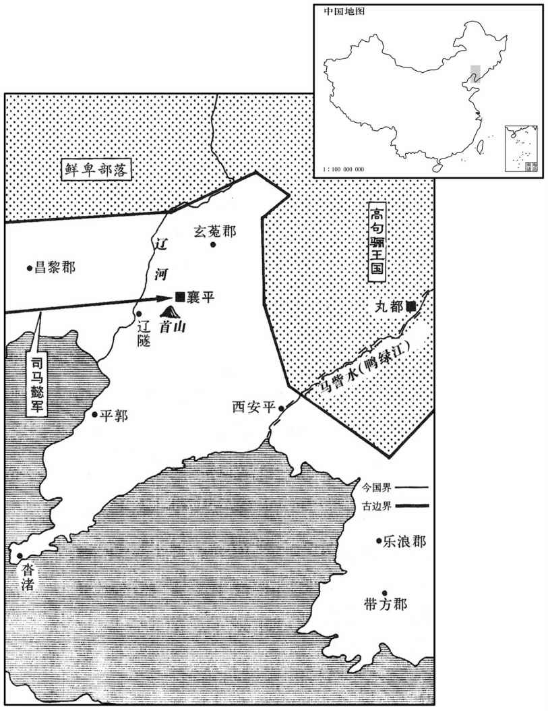
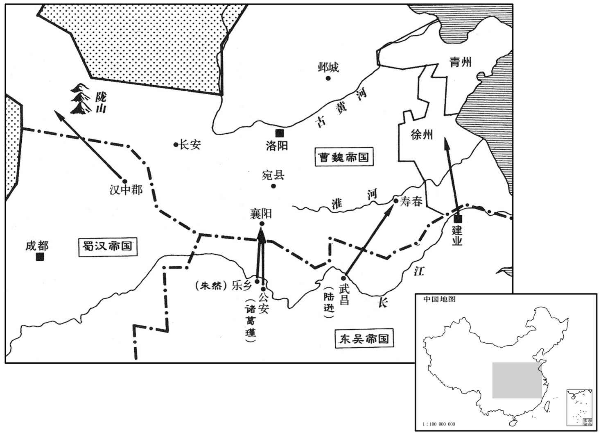
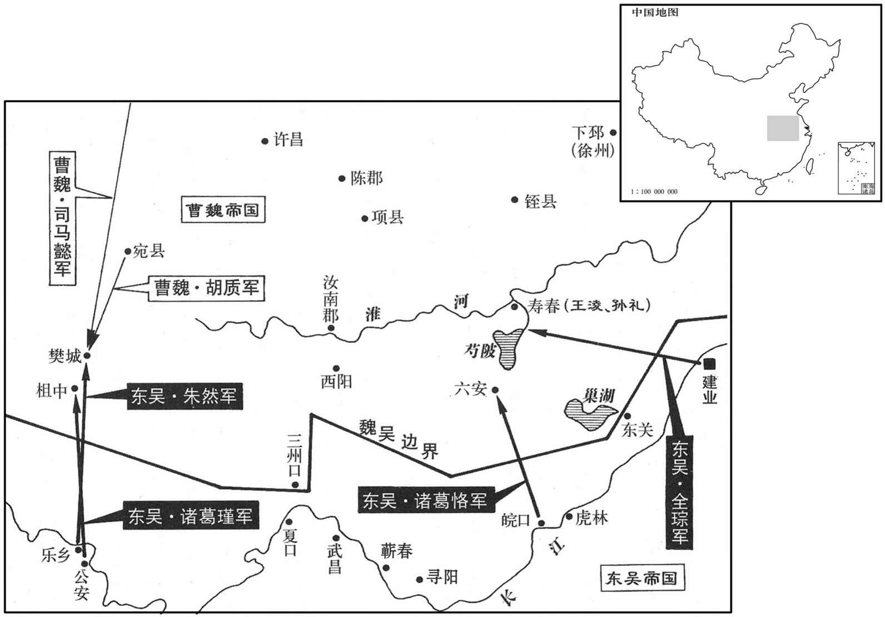
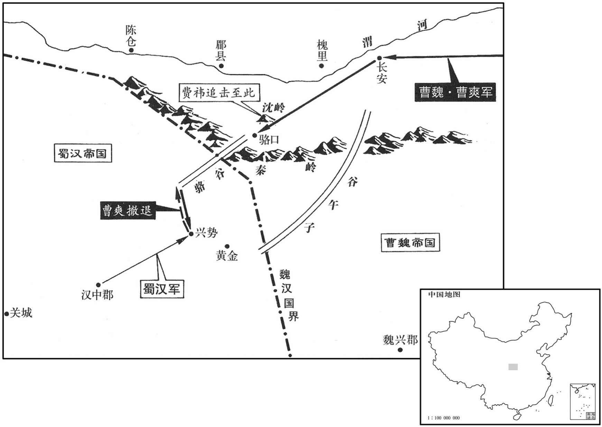

卷次与人物目录 / 卷74
资治通鉴 · 卷第七十四【魏纪六】
公元238年至公元245年 · 原文、白话与胡三省注
本页按胡注本编排保存全卷内容。白话采用本站所据译本，未可靠对应的内容另列说明；事件标题用于定位，并非原书文字。
本卷共109段原文，104段有译文对应，5段缺译或待核对。
卷第七十四【魏纪六】起着雍敦牂（戊午），尽旃蒙赤奋若（乙丑），凡八年。
卷首原文与注释
烈祖明皇帝下
公元238年 · 魏烈祖明皇帝景初二年
景初二年〔（戊午、二三八）〕
上传原文的注释括号有异常，字符原样保留；无法可靠划分的段落默认全文显示。
本年事件索引（现代整理）
- 曹叡命司马懿率军征讨辽东，预判公孙渊将困守襄平
- 公孙渊再向吴求援，孙权许以相助
- 蒋济判断孙权不会真正救援辽东，只会伺机观望
- 卢毓荐举韩暨为司徒，曹叡采纳
- 刘禅立张氏为皇后，立刘璇为太子
- 孟光考察太子刘璿，郤正称其孝谨仁恕
- 吴国铸造当千大钱
- 韩暨去世
- 司马懿渡过辽水，迂回直取襄平并围城
- 辽东暴雨围困魏军，司马懿拒绝撤营、等待公孙渊粮尽
- 司马懿攻破襄平，斩杀公孙渊父子并平定辽东四郡
- 司马懿为忠谏被杀的纶直、贾范封墓，释放公孙恭
- 曹叡赐死早已告发公孙渊的公孙晃及其家属
- 吴国改元赤乌
- 步夫人去世
- 孙权追封步夫人为皇后，徐氏终遭废黜
- 吕壹掌管监察文书，借机专权陷害群臣
- 是仪独自否认听闻刁嘉诽谤，救下二人
- 潘濬欲除吕壹以肃朝政，得知孙权未听太子进言后作罢
- 步骘劝孙权信任顾雍、陆逊、潘濬等忠臣
- 朱据遭吕壹诬陷，孙权查明后追究吕壹
- 吕壹被处死，孙权拒绝以酷刑加重其罪
- 孙权反省未能听取群臣谏言，鼓励诸臣直言
- 卫臻任司徒，崔林任司空
- 蒋琬率军驻扎汉中
- 曹叡病重
- 曹叡立郭氏为皇后
- 蒋济警告刘放、孙资长期专掌机密会滋生近臣专权，曹叡不纳
- 曹叡病重，先任命燕王曹宇等辅政
- 刘放、孙资离间燕王曹宇，促成曹爽参与辅政
- 曹叡召司马懿回朝，司马懿疑京师有变而疾驰入朝
春，正月，帝召司马懿于长安，使将兵四万讨辽东。讨公孙渊也。留司马懿于长穴，以备蜀也。诸葛亮死，乃敢召之远略。将即亮翻。〕议臣或以为四万兵多，役费难供。〔议臣，当时谋议之臣也。〕帝曰：「四千里征伐，〔续汉志：辽东郡在洛阳东北三千六百里。〕虽云用奇，亦当任力，不当稍计役费也。」帝谓懿曰：「公孙渊将何计以待君﹖」对曰：「渊弃城豫走，上计也；据辽东拒大军，其次也；〔「辽东」当作「辽水」。〕坐守襄平，此成禽耳。」〔襄平县，汉辽东郡治所，公孙渊所都。〕帝曰：「然则三者何出﹖」对曰：「唯明智能审量彼我，〔量，音良。〕乃豫有所割弃，此既非渊所及。」又谓：「今往孤远，〔言孤军远征也。〕不能支久；必先拒辽水，后守襄平也。」帝曰：「还往几曰﹖」对曰：「往百日，攻百日，还百日，以六十日为什息，如此，一年足矣。」
春季，正月，明帝从长安召回司马懿，命他率军四万人讨伐辽东。参预谋议的大臣有的认为四万兵员太多，军费难以提供。明帝说：“四千里远征讨伐，虽说要出奇制胜，但也应当依靠实力，不应斤斤计较军费。”明帝对司马懿说：“公孙渊放弃守城先行逃走，是上策；据守辽东抗拒大军，是中策；如死守襄平，必被生擒。”明帝说：“那么，三者中他将采用哪一种？”回答说：“只有明智的人，才能审慎度量敌我双方的力量，才会预先有所舍弃。这既不是公孙渊的才智所能达到的，他又会认为我军是孤军远征，不能支持长久，一定是先在辽水抗拒，然后退守襄平。”明帝说：“往返需多少天？”回答说：“进军一百天，攻战一百天，返回一百天，以六十天作为休息日，这样的话，一年足够了。”
公孙渊闻之，复遣使称臣，求救于吴。吴人欲戮其使，〔欲报张弥、许晏之忿也。事见七十二卷青龙元年。复，扶又翻。〕羊醸曰：〔醸，古道字。〕「不可，是肆匹夫之怒而捐霸王之计也，不如因而厚之，遣奇兵潜往以要其成。〔要，一遥翻。〕若魏伐不克，而我军远赴，是因结遐夷，义形万里；若兵连不解，首尾离隔，则我虏其傍郡，驱略而归，亦足以致天之罚，报雪曩事矣。」吴主曰：「善！」乃大勒谓渊使曰：「请俟后问，当从简书，〔左传：狄伐邢，管敬仲言于齐侯曰：诗云：「岂不怀归，畏此简书。」简书，同恶相恤之谓也；请救邢以从简书。〕必与弟同休戚。〔渊遣使谢吴，自称燕王，求为兄弟之国，故权因而称之为弟。〕又曰：「司马懿所向无前，深为弟忧之。」〔此晋史臣为此语耳，权必无此言。为，于伪翻。〕
公孙渊听到消息，再次源遣使节称臣，向吴国求救。吴国打算杀掉来使，羊说：“不可，这是发泄匹夫一时怒气，而破坏称霸称王的大计，不如就势厚待他，然后派遣奇兵暗中前往，以胁迫公孙渊归附。如果魏讨伐不能取胜，而我军远赴救难，便与远方夷族结下恩情，大义表现于万里之外。如果双方交战难解难分，辽东前方、后方分隔，那么我们就在它边陲郡县，驱逐劫掠而归，也足以表达上天的惩罚，对往事报仇雪恨了。”吴王说：“好！”于是大规模地集结部队，并对公孙渊来使说：“请回去等候音信，我们遵从来函吩咐，一定和老弟休戚与共！”又说：“司马懿所向无敌，我深为老弟担忧。”
帝问于护军将蒋济曰：「孙权其救辽东乎﹖」济曰：「彼知官备已固，〔魏、晋之间，谓国家为官。〕利不可得，深入则非力所及，浅入则劳而无获；权虽子弟在危，犹将不动，况异域之人兼以往者之辱乎！〔亦谓斩张弥、许晏也。〕今所以外扬此声者，谲其行人，〔谲，古穴翻。诈也。〕疑之于我，我之不克，冀其折节事己耳。然沓渚之间，去渊尚远，若大军相守，事不速决，则权之浅规，或得轻兵掩袭，未可测也。」〔浅规，谓规图浅攻，不敢深入；吴君臣之为谋，已不逃蒋济所料矣。〕
明帝向护军将军蒋济问道：“孙权会救援辽东吗？”蒋济说：“孙权知道我们戒备严密，不可能从中渔利，援军深入则力所不及，不深入势必徒劳无功；即使是儿子、兄弟处于那种危险境地，孙权都不会出动，何况是异域他国之人，加之以前还被羞辱过。如今所以向外宣扬出兵救辽，不过是欺骗辽东来使，使我们产生疑惧，一旦我们不能攻克，希望公孙渊向他臣服而已。可是沓渚县离公孙渊所在地相距还远，如果大军受到阻碍，相持不下，战斗不能速决，那么孙权的临时决策，或者轻兵突袭，就不可预料了。”
帝问吏部尚书卢毓：「谁可为司徒者﹖」毓荐处士管宁。〔处，昌吕翻。〕帝不能用，更问其次，对曰：「敦笃至行，则太中大夫韩暨；〔行，下孟翻。〕亮直清方，司隶校尉崔林；贞固纯粹，则太常常爻。」二月，癸卯，以韩暨为司徒。
明帝问吏部尚书卢毓说：“谁可以担任司徒？”卢毓推荐处士管宁，明帝不采用，又问其次的人选，卢毓答道：“敦厚忠诚的是太中大夫韩暨，耿直高洁的是司隶校尉崔林，忠贞纯朴的是太常常林。”二月，癸卯（十一日），任命韩暨担任司徒。
汉主立皇后张氏，前后之妹也。立王贵人子璇为皇太子，〔璇，旬缘翻。〕瑶为安定王。
汉王立张氏为皇后，是前皇后的妹妹。立王贵人的儿子刘为皇太子，刘瑶为安定王。
大司农河南孟光问太子读书及情性好尚于秘书郎郄正，〔东汉以马融为秘书郎，诣东观典校书；秘书郎盖自融始。好，呼到翻；下同。郄，绮戟翻。〕正曰：「奉亲虔恭，夙夜匪懈，有古世子之风；〔懈，古隘翻。〕接待群僚，举动出于仁恕。」光曰：」如君所道，皆家户所有耳；〔谓其才行不逾中人也。〕吾今所问，欲知其权略智谋〔【章：甲十六行本「谋」作「调」；乙十一行本同；孔本同；张校同；下同。】〕既不正曰：「世子之道，在于承志竭欢，〔承志，谓承君父之志；竭欢，谓左右就养，承颜顺色，以尽亲之欢。〕既不得妄有施为；智谋藏于胸怀，权略应时而发，此之有无，焉可豫知也！」〔焉，于虔翻。〕光知正慎宜，〔慎宜者，谨言语，择其所宜言乃言也。〕不为放谈，乃曰：「吾好直，言无所回避。今天下未定，智意为先，智意自然，不可力强致也。〔强，其两翻。〕储君读书，宁当效吾等竭力博识以待访问，如博士探策讲试以求爵位邪！〔按汉书音义，作简策难问例置案上，在试者意投射，取而答之，谓之射策，即探策也；若录政化得失，显而问之，谓之对策。探，吉南翻。〕当务其急者。」正深谓光言为然。正，俭之孙也。〔俭为益州刺史，汉灵帝中平五年，为盗贼所杀。〕
蜀大司农河南人孟光向秘书郎王询问太子读书情况及性情爱好，正说：“侍奉双亲虔诚恭敬，日日夜夜毫不怠懈，有古代世子的风范；接待群臣，举措出以仁义宽恕之心。”孟光说：“如您所说，都是每家子弟所具备的。我今天要问的，是想知道他的权略智谋如何？”正说：“作为世子的大义，在于继承君父的志向，尽心使父母欢乐。既不能随便有所作为，就把智谋深藏在胸怀之内，权略顺应时势发挥，是否具备这些，怎么可以预先知道呢？”孟光知道正讲话谨慎合宜，不敢放开畅谈，便说：“我喜欢直言，没有什么避讳。如今天下未定，智谋最为重要，智谋是先天秉性，不可用力强迫求得。太子读书，怎么可以效法我们博学强记以备咨询，象博士探策讲试一样以谋求一官半职呢？应当在最急需的方面下功夫。”正深感孟光言之有理。正是俭的孙子。
吴人铸当千大钱。〔杜佑曰：孙权赤乌元年铸一当千大钱，径一寸四分，重十六铢。〕
吴国铸造可当一千的大钱。
夏，四月，庚子，南乡恭侯韩暨卒。
夏季，四月，庚子（初九），南乡恭侯韩暨去世。
六月，司马懿军至辽东，公孙渊使大将军卑衍、杨祚〔姓谱：卑，卑耳国之后，或云鲜卑之后。蔡邕胡太傅碑有太傅掾鴈门卑登。〕将步骑数万屯辽隧，围堑二十余里。〔考异曰：晋宣纪云「南北六七十里，今从渊传。〕诸将欲击之，懿曰：「贼所以坚壁，欲老吾兵也，今攻之，正堕其计。且贼，大众在此，其巢窟空虚；直指襄平，诐之必矣。」乃多张旗帜，欲出其南，〔帜，昌志翻。〕衍等尽锐趣之。懿潜济水，出其北，直趣襄平；〔趣，七喻翻。〕衍等恐，引兵夜走。诸军进至首山，〔首山在襄平西南。〕渊复使衍等道战，〔复，扶又翻；下同。〕懿击，大破之，遂进围襄平。
六月，司马懿大军到达辽东，公孙渊命大将军卑衍、杨祚统率步、骑兵数万人驻扎在辽隧，围城挖掘了长达二十余里的壕沟。魏军将领们想要攻城，司马懿说：“敌人所以坚守壁垒不肯决战，是打算拖死我军，现在攻打他们，正中其计。而且敌人主力在此，他们的老巢必定空虚，我军直指襄平，必能攻破。”于是，打出许多战旗，佯作要向南方出动，卑衍等率全部精锐部队随之向南。司马懿率军暗中渡过辽河，向北挺进，直扑襄平。卑衍等大为惊恐，率军连夜撤回。魏各路大军进抵首山，公孙渊再命卑衍等迎战。司马懿迎击，大败卑衍，遂进军包围襄平。

秋，七月，大霖雨，辽水暴涨，运船自辽口径至城下。〔辽口，辽水津渡之口也。〕雨月余不正，平地水数尺；三军恐，欲移营，懿令军中：「敢有言徙者斩！」都督令史张静犯令，斩之，〔晋职官志：魏制，诸公加兵者置都督令史一人。〕军中乃定。贼恃水，樵牧自若，诸将欲取之，懿皆不听。司马陈珪曰：「昔攻上庸，八部俱进，昼夜不息，故能一旬之半，拔坚城，斩孟达。〔事见七十一卷太和二年。〕今者远来而更安缓，愚窃惑焉。」懿曰：「孟达众少而食支一年，将士四倍于远而粮不淹月；〔淹，留也；言所留之粮不支一月也。〕以一月图一年，安可不速！以四击一，正令失半而克犹当为之，是以不计死伤，与粮竞也。〔竞，争也。懿之语珪，犹有廋辞，盖其急攻孟达，岂特与粮竞哉﹖惧吴、蜀救兵至耳。〕今贼众我寡，贼饥我饱，水雨乃尔，〔尔，如此也。〕功力不设，虽当促之，亦何所为！自发京师，不忧贼攻，但恐贼走。今贼粮垂尽而围落未合，掠其牛马，抄其樵采，〔抄，楚交翻。〕此故驱之走也。夫兵者诡道，善因事变。〔言善兵者，能因事而变化也。〕贼凭众恃雨，故虽饥困，未肯束手，当示无能以安之。取小利以惊之，非计也。」〔懿知渊可禽，欲以全取之。〕朝廷闻师遇雨，咸欲罢兵。帝曰：「司马懿临危制变，禽渊可计日待也。」
秋季，七月，连降大雨，辽河暴涨，运粮船队从辽口直抵城下。大雨下了一个多月不停，平地水深数尺，魏三军恐惧，打算迁移营垒，司马懿下令军中：“有敢说迁营者斩！”都督令史张静违抗命令，被斩，军心这才安定。敌人依仗水势，砍柴放牧依然如故，将领们想要俘获他们，司马懿都不准许。司马陈说：“从前攻打上庸，八支部队同时进发，日夜不停，所以能用十六天时间攻下坚城，斩杀孟达。这次远征而来，反而更安闲迟缓，我私下感到疑惑。”司马懿说：“孟达兵少但存粮可支撑一年，我军将士四倍于孟达，但粮食不能支持一个月。以一个月攻打一年，怎么可以不快速？以四个兵士攻击一个敌人，即使丧失一半而能够攻克，都应当去做，所以不顾死伤地强攻，是与粮食竞争啊！如今敌众我寡，敌饥我饱，何况雨水如此之大，功力不能施展，虽然应当速战速决，又能干什么呢？自打从京师出发，不担心敌人进攻，只恐怕敌人逃走。如今敌人粮食就要耗尽，可是我们的包围还没完成，抢掠他们的牛马，抄袭他们的樵夫，这是故意逼迫他们逃走。用兵是一种诡诈的行为，要善于随机应变。敌人凭仗人多，倚仗雨大，虽然饥饿窘困，还不肯束手投降，应当显示出我们无能以便使他们安心。如果因贪图小利使他们惊吓逃跑，这不是好的计策。”朝中听说大军遇雨，一致打算退兵。明帝说：“司马懿有能力临危控制事变，捉住公孙渊指日可待。”
雨霁，懿及合围，作土山地道，楯橹钩冲，〔楯，干也，攻城之士以扞蔽其身。橹，楼车，登之以望城中。钩，钩梯也。所以钩引上城者。冲，冲车也，以冲城。〕昼夜攻之，矢石如雨。渊窘急，〔窘，巨陨翻。〕粮尽，中相，食死者甚多，其将杨祚等降。八月，渊使相国王建、御史大夫柳甫请解围却兵，当君臣面缚。懿命斩之，檄告渊曰：「楚、郑列国，而郑伯犹肉袒牵羊迎之。〔左传：楚庄王围郑，克之入自皇门，至于逵路，郑伯肉袒牵羊以逆。〕孤天子上公，〔汉太傅，位上公。懿时为太尉而自谓上公，以太尉于三公为上也。〕而建等欲孙解围退舍，岂得礼邪！二人老耄，传言失指，已相为斩之。〔为，于伪翻。〕若意有未已，可更遣年少有明决者来！」〔少，诗照翻。〕渊复遣侍中卫演乞克日送任，〔送任，谓送质子也。复，扶又翻。〕懿谓演曰：「军事大要有五：能战当战，不能战当守，不能守当走；余三事，但有降与死耳。〔降，户江翻。〕汝不肯面缚，此为决就死也，不须送任！」壬午，襄平溃，渊与子修将数百骑突围东南走，大兵急击之，斩渊父子于梁水之上。〔班志：辽东郡辽阳县，注云：大梁水西南至辽阳，入辽水。水经注：小辽水出玄菟高句丽县辽山，，西南流径襄平县，入大梁水；水出北塞外，西南流而入于辽水。〕懿既入城，诛其公卿以下及兵民七千余人，筑为京观。〔杜预曰：积尸封土于其上，谓之京观。观，古玩翻。〕辽东、带方、桨浪玄菟四郡皆平。〔汉带方县，属乐浪、玄菟四郡皆平。〔汉带方县，属乐浪郡公孙氏分立郡。陈寿曰：建安中，公孙康分屯有以南荒地为带方郡倭、韩诸国羁属焉。乐浪，音洛琅。菟，同都翻。〕
雨止，司马懿随即合拢包围圈，高堆土山，深挖地道，用干、橹车、钩梯、冲车，日夜攻城，射箭与石密集如雨。公孙渊窘迫危急，粮食已尽，以至人与人互相格杀残食，死亡极多，部将杨祚等投降。八月，公孙渊派遣相国王建、御史大夫柳甫请求解围退兵，如果同意，君臣定当自缚面降。司马懿命斩来使，用檄文通知公孙渊说：“楚国和郑国地位相等，可是郑伯还光着脊背牵羊出城迎降。我是天子的上公，而王建等想要我解围后退，难道不失礼吗？这二个老糊涂，传话失去意指，已被我杀掉。如还有请降之意，就另派年轻有明快决断的人前来。”公孙渊又派侍中卫演，请求指定日期，派送人质。司马懿对卫演说：“军事大要有五条，能战则战，不能战就当坚守，不能坚守就当逃走。剩下的两条路，就只有投降和死了。公孙渊不肯自缚面降，这是决心去死，不必送来人质！”壬午（疑误），襄平城败溃，公孙渊和儿子公孙带领数百骑兵从东南突围逃走，魏军急忙追击，在梁水岸边斩杀了公孙渊父子。司马懿既已进入襄平城；诛杀城中公卿以下官吏及兵民七千余人，积尸封土，筑成大坟，辽东、带方、乐浪、玄菟四郡全部平定。
渊之将反也，将军纶直、贾范等苦谏，〔纶，姓；直，名；其先以邑为姓。渊皆杀之，懿乃封直等之墓，显其遗嗣，释渊叔父恭之囚。〔渊囚恭事见七十一卷太和二年。〕中国人欲还旧乡者，恣听之。遂班师。〔司马懿与诸葛亮相守闭壁，若无能为者；及讨公孙渊，智计横出。鄙语有云：「棋逢敌手难藏行」，其是之谓乎！〕
本段缺少可靠对应白话，原文完整保留；未使用生成译文。
初，潚兄晃为恭任子在洛阳，先渊未反时，数陈其变，〔先，悉荐翻。数，所角翻；下同。〕欲令国家讨渊；及渊谋道，帝不忍市斩，欲就狱杀之。〔晃数陈渊之必反，非同逆者也；帝欲杀之以绝其类，刑之于于市则无名，故欲就狱杀之。〕廷尉高柔上疏曰：「臣窃闻晃先数自归，陈渊祸萌，虽为凶族，原心可恕。夫史尼亮司马牛之忧，〔司马牛，未司马桓魋之弟也。魋凶恶，牛忧之，曰：「人皆有兄弟，我独亡。」谓魋之积恶，将死亡无曰。〕祁奚明叔向之过，〔左传：晋人逐栾盈，杀羊舌虎，囚虎兄叔向。祁奚见范宣子曰：「管、蔡为戮，周公右王；若之何以虎也弃社稷！」宣子言诸公而免之。〕在昔之美义也。臣以为晃信有言，宜贷其死；苟自无言，便当市斩。今进不赦其命，退不彰其罪，闭着囹圄，使自吊分，〔着，直略翻。引分，即引决也。〕四方观国，或疑此举也。」帝不听，竟遣使赍金屑饮晃及其妻子，〔饮，于鸩翻。〕赐以棺衣，殡敛于宅。〔宅，晃所居者。敛，力赡翻。〕
最初，公孙渊的哥哥公孙晃作为公孙恭的人质住在洛阳，公孙渊还未反叛时，公孙晃几次报告公孙渊的变故，打算让魏出兵讨伐。到公孙渊图谋叛逆，明帝不忍心把公孙晃在街市斩首，打算下狱处决。廷尉高柔上书说：“我私下听说公孙晃以前多次自动归附，报告公孙渊已萌生祸心，他虽然是凶犯宗族，但是推究其本心，是可以宽恕的。从前，孔丘曾经明察司马牛的忧虑，祁奚曾经指明叔向没有过失，这都是古代的美好义行。我认为公孙晃确实在先前有过举报，应免他一死；如果他本来没有告发，应应当在街市上斩首示众。如今是进不赦免其性命，退又不公开其罪状，只是紧闭狱门，命他自杀，天下各地，或许会怀疑我们的做法。”明帝不采纳，竟派遣使节带着搀有金屑的酒让公孙晃和他的妻子儿女饮下，然后赏赐棺木丧衣，埋葬在公孙晃的住宅。
九月，吴改元赤乌。〔权以赤乌集于殿前改元。〕
九月，吴改年号为赤乌。
吴步夫人卒。
吴步夫人去世。
初，吴主为讨虏将军，在吴，娶吴郡徐氏；太子登所生庶贱，吴主令徐氏母养之。徐氏勡，故无宠。及吴主西徙，〔谓自吴而西徙都武昌也。〕徐氏留处吴；而临淮步夫人宠冠后庭，〔步夫人，骘之族也。处，昌吕翻。冠，古现翻。〕吴主欲立为皇后，而群臣议在徐氏，吴主依违者十余年。〔依违，不决也。〕会步氏卒，群臣奏追赠皇后印绶，〔绶，音受。〕徐氏竟废，卒于吴。
起初，吴王任讨虏将军，驻守吴郡，娶吴郡人徐氏。太子孙登生母出身卑贱，吴王命徐氏抚养。徐氏十分嫉妒，所以失宠。等到吴王向西迁移，徐氏仍留住在吴郡。这时，临淮人步夫人在后宫最受宠爱，吴王打算立为皇后，可是群臣议论应立徐氏，吴王犹豫不决，拖延了十几年。恰好步氏去世，群臣奏请追赠步夫人皇后印信、绶带。徐氏竟被废，在吴郡去世。
吴主使中书郎吕壹典校诸官府及州郡文书，壹因此渐作威福，深文巧诋，排陷无辜，毁短大臣，纤介必闻。太子登数谏，〔数，所角翻；下同。〕吴主不听，群臣莫敢复言，〔复，扶又翻。〕皆畏之侧目。
吴王让中书郎吕壹主管各官府及州郡公文，吕壹因此渐渐作威作福起来，援引法律条文进行狡诈的诋毁，排斥陷害无辜，诽谤朝廷大臣，连细微小事也禀闻吴王。太子孙登屡次规劝，吴王都不接受，群臣不敢再表示意见，对吕壹都深怀恐惧，侧目而视。
壹诬白故江夏太守刁嘉谤讪国政，〔讪，山谏翻。〕吴主怒，收嘉，系狱验问。时同坐人皆畏怖壹，〔其时与嘉同坐者。坐，徂卧翻。〕并言闻之。侍中北海是仪独云无闻，〔是，姓；仪，名。仪本姓氏，孔融嘲仪以氏字为民上无头，遂改姓是。〕遂见穷诘，累日，诏旨转厉，群臣为之屏息。〔为，于伪翻。屏，必郢翻；屏息，不敢舒气也。〕仪曰：「今刀锯已在臣颈，臣何敢为嘉隐讳，自取夷灭，为不忠之鬼！顾以闻知当有本末。」据实答问，辞不倾移，吴主遂舍之；〔舍，读曰舍。〕嘉亦得免。
吕壹诬告前江夏太守刁嘉诽谤讥讽朝政，吴王大怒，逮捕了刁嘉，下狱审问。当时被牵连的人都畏惧吕壹，都说听到过刁嘉诽谤之词，只有侍中北海人是仪一人说没有听到过，于是被连日穷追诘问，诏书也越发严厉，群臣都为他捏着一把汗，是仪说：“如今刀锯已经架在脖颈上，我怎敢为刁嘉隐瞒，自取杀身灭门之祸，成为不忠的鬼魂？只是要说听到、了解此事，必须有头有尾。”是仪据实回答审问，供辞不改，吴王于是放了他，刁嘉也被免罪。
上大将军陆逊、太常潘浚忧壹乱国，每言之辄流涕。壹白丞相顾雍过失，吴主怒，诘责雍，〔诘，去吉翻。〕黄门侍郎谢図语次问壹：〔図，与宏同；乎萌翻〕「顾公事何如﹖」壹曰：「不能佳。」図又问：「若此公免退，谁当代之﹖」壹未答。図曰：「得无潘太常得之乎﹖」壹〔【章：甲十六行本「壹」下有「良久」二字；乙十一行本同；孔本同；退斋校同。】〕曰：「君语近之也。」〔近，其靳翻。〕図曰：「潘太常常切齿于君，但道无因耳。〔谓欲奏举其罪而非太常之职，故其道无因也。〕今日代顾公，恐明日便击君矣！」〔汉制，丞相、御史举奏百官有罪者。〕壹大惧，遂解散雍事。潘浚求朝，诣建业，〔浚本留武昌。朝，直遥翻。〕欲尽辞极谏，至，闻太子登已数言之〔至建业而知太子数言壹事。〕而不见从；浚乃大请百寮，欲因会手刃杀壹，以身当之，〔以身当擅杀之罪。〕为国除患。〔为，于伪翻；下同。〕壹密闻佑知，称疾不行。
上大将军陆逊、太常潘浚忧虑吕壹祸乱国政，一谈到这件事，就止不住流泪。吕壹指控丞相顾雍有过失，吴王大怒，责问顾雍。黄门侍郎谢在闲谈时问吕壹：“顾公之事如何？”吕壹答：“不能乐观。”谢又问：“如果此公被免，应当是谁代替他？”吕壹没回答。谢说：“莫非是潘浚？”吕壹答：“你的话差不多。”谢又说：“潘浚常常对你恨得咬牙切齿，只是没有机会讲罢了。今日他如接替顾公，恐怕明日就会打击你了。”吕壹万分恐惧，亲自去建业，打算尽辞极谏。到达后，听说太子孙登已经多次揭发吕壹，而不被接受。潘浚于是宴请文武百官，打算在席间亲手杀死吕壹，再以性命抵罪，为国除害。吕壹得到密报，声称有病不去赴宴。
西陵督步骘上疏曰：「顾雍、陆逊、潘浚，志在竭诚，寝食不宁，念欲安国利民，建久长之计，可谓心膂股肱社稷之臣矣。宜各委任，不使他官监其所司，课其殿最。〔监，古衔翻。殿，可甸翻。贤曰：殿，军后也；课居后也。最，凡要之先也；课居先也。〕此三臣思虑不到则已岂敢欺负所天乎！」〔君，天也。〕
西陵督步骘上书说：“顾雍、陆逊、潘浚志在竭诚报国，睡觉吃饭都不安宁，思虑着怎样安国利民，建立国家的长治久安之计，可以说是君王的心腹和肢体，国家的重臣了。应当对他们分别委以重任，不要让其他官员监督他们主管的工作，考核他们的政绩等次。这三位大臣思虑不到的事情就算了，岂敢欺骗辜负君王呢？”
左将军朱据部曲应受三万缗，工王遂诈而受之。壹疑据实取，考问主者，〔主者，据吏也。〕死于杖下；据哀其无辜，厚棺敛之，〔棺，古玩翻。敛，力验翻。〕壹又表据吏为据隐，故厚其殡。吴主数责问据，据无以自明，藉草待罪；数曰，典军吏刘助觉，言王遂所所取。〔刘助觉其事而言之。〕吴主大感悟，曰：「朱据见枉，况吏民乎！」乃穷治壹罪，〔治，直之翻。〕赏助百万。
左将军朱据的部曲应领受三万钱，工匠王遂将钱诈骗冒领。吕壹怀疑朱据实际将钱私取，拷问朱据部下主事的军吏，将他打死在棍棒之下。朱据哀伤他无辜屈死，丰厚地为他入殓安葬。吕壹又上表说朱据军吏为朱据隐瞒，所以朱据为他厚葬。吴王屡次责问朱据，朱据无法表明自己清白，只好搬出家门，坐卧在草席上听候定罪。几天后，典军吏刘助发觉此事，说钱被王遂取走。吴王深有感触，省悟地说：“朱据尚被冤枉，何况小小吏民呢！”于是深究吕壹罪责，赏赐刘助钱百万钱。
丞相雍至廷尉断狱，〔断，丁乱翻。〕壹以囚见。雍和颜色问其辞状，临出，又谓垌曰：「君意得无欲有所道乎﹖」〔道，言也。〕壹叩头无言。时尚书郎怀叙〔怀，姓；叙，名。姓谱：无怀氏之后。〕面詈辱壹，雍责叙曰：「官有正法，何至于此！」有司奏壹大辟，〔辟，毗亦翻。〕或以为宜加焚裂，用彰元恶，〔殷纣用炮烙之刑，项羽烧杀纪信，汉武帝焚苏文于横桥，然未以为刑名也。王莽作焚如之刑，后世不复遵用。裂，谓车裂，古之轘刑。〕吴主以访中书令会稽阚泽，〔会，古外翻。阚，姓也。左传齐有大夫阚止。〕泽曰：「盛明之世，不宜复有此刑。」〔复，扶又翻；下同。〕吴主从之。
丞相顾雍到廷尉审理和判决案件，吕壹以阶下囚身分相见，顾雍面色温和地审问他的口供，临走出时，又对吕壹说：“您是否还有什么要讲的？”吕壹叩头无语。当时尚书郎怀叙当面责骂羞辱吕壹，顾雍责备怀叙说：“官府有正常的法律，为什么要这样！”有关部门奏请处以吕壹死刑，有的认为应加以焚烧、车裂之刑，以表明他是罪魁祸首，吴王就此事请问中书令会稽人阚泽，阚泽说：“盛明之世，不宜再有此刑。”吴王听从了他的意见。
壹既伏诛，吴主使中书郎袁礼还云：『与子瑜、子山、义封、定公相见，〔诸葛瑾，字子瑜。步骘，字子山。朱然，字义封。吕岱，字定公。瑾，渠吝翻。骘，职日翻。〕并咨以时事当有所先后，〔谓时事所当行何者为先，何者为后也。〕各自以不掌民事，不肯便有所陈悉，推之伯言、承明。〔推，吐雷翻。〕陆逊，字伯言。潘浚，字承明。〕伯言、承明见礼泣涕恳侧，辞旨辛苦，至乃怀执危怖，有不自安之心。』〔怖，普布翻。〕闻之帐然，深自刻怪！〔刻，怪也。〕何者﹖夫惟圣人能无过行，〔行，下孟翻。〕明者能自见耳。人之举厝，何能悉中！〔中，竹仲翻。〕独当己有以伤拒众意，忽不自觉，故诸君有嫌难耳。不尔，何缘乃至于此乎﹖与诸君从事，自少至长，发有二色，〔二色，谓班白也。少，诗照翻。长，知两翻。〕以谓表里足以明露，公私分计足用相保，〔分，扶问翻。〕义虽君臣，恩犹骨肉，荣福喜戚，相与共之。忠不匿情，智无遗计，事统是非，〔言行事是，则君臣同其是；非，则同其非也。〕诸君岂得从容而已哉！〔从，千容翻。〕同船济水，将谁与易！〔易，如字。〕齐桓有善，管子未尝不叹，有过未尝不谏，谏而不得，终谏不止。今孙自省无桓公之德，〔省，悉景翻。〕而诸君谏诤未出于口，仍执嫌难；以此言之，孤于齐桓良优，未知诸君于管子何如耳！」〔下之于上，不从其令而从其意。孙权自谓优于齐桓，而责其臣以管子。使吴诚有管子，亦不敢尽言于权，观诸陆逊可见矣。〕
吕壹既已处死，吴王让中书郎袁礼向诸位大将道歉，同时询问他们对时事兴革的意见。袁礼返回后，又有诏书责备诸葛瑾、步骘、朱然、吕岱等说：“袁礼回来后说：‘与诸葛瑾、步骘、朱然、吕岱相见，同时向他们询问时事先后安排的意见，各人都以不掌民事为由，不肯当即发表意见，全推给陆逊、潘浚。陆逊、潘浚见到袁礼，流泪不止，态度诚恳痛切，辞意辛酸痛苦，甚至心怀危惧，有一种感觉不安全的神情。’我听了不禁怅然，内心深感困惑。为什么？天下只有圣人才能无过，只有聪明人才能自察。普通人的举止行动，怎么可能全部正确？自以为是而有伤害抵触众意的地方，一时忽视而没有觉察，所以使各位心存疑忌畏难了。不然的话，有什么缘由至于这样？和各位共事，从年少至年长，如今头发已经花白，自以为表里都可以和诸位坦诚相见，公私情分足以互保；大义上我们是君臣关系，但恩情上犹如骨肉至亲，荣耀、福分、喜乐、悲戚，都共同分享和承受。忠臣不应该隐瞒实情，智士不应该保留谋略，不论事情是非如何，各位怎么可以袖手旁观，自得悠闲呢？我们是同舟共济，还有谁能替代？古代齐桓公有善行，管仲没有不赞叹；有过失，没有不直言规劝；如不被采纳，则永不休止地规劝。如今我自知没有齐桓公的德行，可是各位不肯开口直言规劝，仍然采取避嫌畏难的态度，就这一点而言，我比齐桓公还好一点，不知各位比起管仲来又是如何？”
冬，十一月，壬午，以司空卫臻为司徒，司隶校尉崔林为司空。
冬季，十一月，壬午（二十四日），魏任命司空卫臻担任司徒，司隶校尉崔林担任司空。
十二月，汉蒋琬出屯汉中。
十二月，蜀蒋琬出兵驻扎在汉中。
乙丑，帝不豫。
乙丑（初八），魏明帝患病。
辛巳，立郭夫人为皇后。
辛巳（二十四日），魏立郭夫人为皇后。
初，太祖为魏公，以赞令刘放、〔鄮县，汉属沛郡，王莽改曰赞治，魏分属谯郡。或曰赞，相也，凡出令使之赞相，因以为官名。盖魏武霸府所置也。〕参军事孙资皆为秘书郎。文帝即位，更名秘书曰中书，以放为监，资为令，遂掌机密。〔汉桓帝延熹二年，置秘书监；魏武为魏王，置秘书令丞，典尚书奏事，黄初初，改为中书，置监、令，中书有监、令自此始。自魏及晋，遂为要官，荀勖所谓凤凰池也。更，工衡翻。〕帝即位，尤见宠任，皆加侍中、光禄大夫，封本县侯。〔放，涿郡方城人。资，太原中都人。〕是时，帝亲览万机数，数兴军旅，〔数，所角翻。〕腹心之任，皆二人管之；每有大事，朝臣会议，常令决其是非，择而行之。中护军蒋济上疏曰：〔此疏亦是济为中护军时所上，通鉴因叙放、资事而书之于此。〕「臣闻大臣太重者或危，左右太亲者身蔽，古之至戒也。往者大臣秉事，外内扇动；〔盖谓文帝时也。或曰：谓受遗大臣也。〕陛下卓然自览万机，莫不祗肃。夫大臣非不忠也，然威权在下，则众心慢上，势之常也。陛下既已察之于大臣，愿无忘之于左右，左右忠正远虑，未必贤于大臣，至于便辟取合，或能工之。〔便，毗连翻。辟，读曰僻。〕今外所言，辄厔『中书虽使恭慎，不敢外交』。但有此名，犹惑世俗，况实握事要，日在目前；傥因疲倦之间有所割制，〔谓因人主疲倦之时，有所剖割而制断也。〕众臣见其能推移于事，即亦因时而向之。一有此端，私招朋援，臧否毁誉，必有所兴，〔否，音鄙。誉，音余。〕功负赏罚，必有所易，〔负，罪也；易则赏罚不当乎功罪。〕直道而上者或壅，曲附左右者反达，因微而入，缘形而出，意所狎信，不复猜觉。此宜圣智所当早闻，外以经意，则形际自见；〔言放、资日在左右，狎而信之，不复觉其为奸；非若早闻忠言，自览万机，外以示经意国事，则放、资之形际必呈露而不可掩矣。复，扶又翻。见贤遍翻。〕或恐朝臣畏言不合而受左右之恐，莫适以闻。〔适，丁历翻。〕臣窃亮陛下潜神默思，公听并观，若事有未尽于理而物有未周于用，将改曲易调，〔调，徒钓翻。以琴瑟为喻也。〕远与黄、唐角功，〔角者，两两相当也。黄、唐，黄帝、唐尧。〕近昭武、文之绩，岂牵近习而已哉！然君不可悉任天下之事，必当有所付；若委之一臣，自非周公旦之忠，管夷吾之公，则有弄权〔【章：甲十六行本「权」作「机；乙十一行本同；孔本同。】〕败官之敝。〔败，补迈翻。〕当今柱石之士虽少，至于行称一州，〔少，诗沼翻。行，户孟翻。〕智效一官，忠信竭命，各奉其职，可并驱策，不使圣明之朝有专吏之名也！」〔专吏，谓专任放、资。〕帝不听。〔自此以前皆非此年事。通鉴因放、资患失之心以误帝托孤之事，遂书之于此以先事。〕
最初，太祖还是魏公时，任命赞令刘放、参军事孙资同时担任秘书郎。文帝即位，改称秘书为中书，任命刘放担任中书监，孙资担任中书令，两人掌管机密。明帝即位，两人尤其受到恩宠信任，都加任侍中、光禄大夫，封为本县侯。这时，明帝亲自处理日常政务，屡次出兵，中枢筹划都由他俩掌管；每有国家大事，朝臣集会议事，经常让他俩决断是非，择定而行。中护军蒋济上书说：“我听说大臣权力太重，国家就有危险，左右过于亲近，耳目必受蒙蔽，这是古代最大的戒鉴。以前大臣掌事，内外动摇不安；陛下识见高明，亲自处理国事，无不肃然安定。大臣不是不忠，只是权威下移，人们对君王就一定怠慢，这是情势发展的必然。陛下既然已经对大臣有所明察，希望不要忘记左右亲信造成的流弊。左右亲信的忠心和谋略，未必胜于大臣，至于逢迎诌媚、阿谀奉承，有的却极其擅长。如今外面议论，动辄就说‘中书’，虽然让他们恭敬谨慎，不敢对外交往，然而仅有这个名义，就可以迷惑世俗，何况实际掌握国家要事，整日侍奉在眼前；倘若趁着陛下疲倦之时，有所剖断，窃弄权威，大臣见他们能影响国事，也就会顺势转而趋向他们。一旦有此弊端，私结成朋党，褒贬毁誉就会兴起，功过赏罚必定颠倒，走正路向上的或许会被阻塞，而曲意逢迎左右近侍的却能显贵，他们抓住空子就钻，看到迹象就干，陛下亲信他们，也就不再猜疑。这按理是应该让陛下早早听到了解，用心留意，则左右近侍的形迹自然暴露。有人担心朝廷大臣会害怕进言不妥而受左右近臣的怨恨，因而不敢上报陛下和他们对抗。我认为陛下静神沉思，垂听舆论全面观察，如果事物有不尽合理或是不合于用的，就要改换曲调，远可以和黄帝、唐尧的功劳相等，近可以使武帝、文帝的政绩发扬，岂止是不受左右控制而已！可是君王不可能独自承担天下的全部事情，必当有所托付。如果委任一个臣属，除非有周公旦的忠心，管仲的公道，否则就有弄权败官的弊病。当今之世，栋梁之才虽然很少，但德行能称职于一州，才智可效力于一官，忠信尽力，各奉其职的人，还是可供驱策的，不要使圣明之朝出现恶吏专权的丑名！”明帝不接受。
及寝疾，深念后事，乃以武帝子燕王宇为大将军，与领军将军夏侯献、武卫将军曹爽、〔魏制：领军将军主中垒、五校、武卫等三营。武卫将军，盖领武卫营也。太祖以许褚典宿卫，迁武卫中郎将，武卫之号自此始。后又迁武卫将军，于是武卫始有将军之号。晋泰始初，罢武卫将军官。〕屯骑校尉曹肇、骁骑将军秦朗等对辅政。爽，真之子；肇，休之子也。帝少与燕王宇善，故以后事属之。〔少，诗照翻。属，之欲翻。〕
到明帝病重卧床，深虑后事，才任命武帝之子燕王曹宇担任大将军，与领军将军夏侯献、武卫将军曹爽、屯骑校尉曹肇、骁骑将军秦朗等共同辅政。曹爽是曹真之子，曹肇是曹休之子。明帝年少时与燕王曹宇亲近友好，所以把后事嘱托给他。
刘放、孙资久典机任，献、肇心内不平；殿中有鸡栖树，二人相谓曰：「此亦久矣，其能复几！」〔殿中畜鸡以司晨，栖于树上，因谓之鸡栖树。献、肇指以喻放、资。一言而发司马氏篡魏之机，言之不可不谨也如是夫！以此观献、肇之轻脱，又何足以托孤哉！复扶又翻。几，居岂翻。〕放、资惧有后害，阴图间之。〔间，古苋翻。〕燕王性恭良，陈诚固辞。帝引放、资入卧内，问曰：「燕王正尔为﹖」〔言其性恭良，为事正如此也。〕对曰：「燕不实自知不堪大任故耳。」帝曰：「谁可任者﹖」时惟曹爽独在侧，放、资
因荐爽，且言：「宜召司马懿与相参。」帝曰：「爽堪其事不﹖」〔不，读曰否。〕爽流汗不能对。放蹑其足，耳之曰：〔附耳语之也。〕「臣以死奉社稷。」帝从放、资言，欲用爽、懿，既而中变，敕停前命；放、资复入见说帝，〔复，扶又翻。见，贤遍翻。说，输芮翻。〕帝又从之。放曰：「宜为手诏。」帝曰：「我困笃，不能。」放即上，执帝手强作之，〔强，其两翻。〕遂赍出，大言曰：「有诏免燕王宇等官，不得停省中。」皆流涕而出。〔考异曰：「宇性恭良，陈诚固辞。帝引见放、资入卧内，问曰：『燕王正尔为﹖』放、资对曰：『燕王实自知不堪大任故耳。』帝曰：『曹爽可代宇否﹖』放、资因赞成之。又深陈宜速召太尉司马宣王，帝维其言。放、资既出，帝意复变，诏止宣王勿来。寻更见放、资曰：『我自召太尉，而曹肇等反使吾止之。』命更为诏，帝独召爽与放、资俱受诏命，遂免宇、献、肇、朗官。」按陈寿当晋世作魏志，若言放、资本情，则于时非美，故迁就而为之讳也。今依习凿齿汉晋晢秋、郭颁世语，似得其实。〕甲申，以曹爽为大将军。帝嫌爽才弱，复拜尚书孙礼，为大将军长史以佐之。〔为下爽出孙礼张本。复，扶又翻。〕
刘放、孙资长久地掌管国家机要，夏侯献、曹肇心中忿忿不平。殿中有一只鸡飞上树，两人互相说：“这也太久了，看他们还能活几天！”刘放、孙资怕有后患，私下想加以离间。燕王曹宇性情恭顺温和，诚恳地坚决推辞，明帝让刘放、孙资进入卧室问道：“燕王正是如此吗？”刘放、孙资答道：“燕王实际是自知不能承担重任，所以这样。”明帝问：“谁可以承担？”当时只有曹爽一人在旁，刘放、孙资顺势推荐曹爽，并且说：“应当召回司马懿参与。”明帝问：“曹爽能承担这件大事吗？”曹爽汗流满面，紧张得不能回答。刘放暗中踩他的脚，耳语说：“快说以死奉社稷。”明帝听从刘放、孙资建议，打算任用曹爽、司马懿，不久中途又改变，下令停止先前的任命。刘放、孙资再次入见游说明帝，明帝再度听从他们的意见。刘放说：“最好亲自写下诏书。”明帝说：“我疲乏极了，不能写。”刘放随即上床，把着明帝的手勉强写下诏书，遂拿着出宫大声说：“有诏书免去燕王曹宇等的官职，不得在宫中滞留。”曹宇等流泪而出。甲申（二十七日），任命曹爽担任大将军，明帝嫌曹爽才能不足，又任命尚书孙礼担任大将军长史辅助他。
是时，司马懿在汲，〔时自辽东还师，次于汲也。汲县自汉以来属河内郡。〕帝令给使辟邪〔辟邪，给使之名，犹汉丞相仓头呼为宜禄也。〕赍手诏召之。先是，燕不为帝画计，〔先，悉荐翻。为，于伪翻。〕以为关事重，宜遣懿便道自轵关西还长安，〔关中事重，谓备蜀及抚安氐羌也。轵县，属河内郡。贤曰：轵故城在洛州济源县东南。五代志：轵关，在河内郡王屋县。杜佑曰：轵关在河南府济源县界。〕事已施行。懿斯须得二诏，前后相违。疑京师有变，乃疾驱入朝。〔朝，直遥翻。〕
这时，司马懿正在汲县，明帝派遣给使辟邪，带着手诏前去召司马懿。开始，燕王替明帝筹划，认为关中事关重大，应让司马懿走小道从轵关向西回到长安，事情已经施行。司马懿不久又接到第二封诏书，前后矛盾，怀疑京师发生变故，于是急速入朝。
译本中未与胡注本可靠对应的内容
以下另列供核对版本差异，不并入胡注本正文。
译本所附古文
[6]庚戍，大赦。
译本白话
庚戌（十九日），魏大赦天下。
译本所附古文
渊之将反也，将军纶直、贾范等苦谏，渊皆杀之，懿乃封直等之墓，显其遗嗣，释渊叔父恭之囚。中国人欲还旧乡者，咨听之。遂班师。
译本白话
公孙渊将要反叛时，将军纶直、贾范等苦苦劝阻，都被公孙渊诛杀。司马懿于是堆土加高纶直等人的坟墓，显扬他们的子弟，释放了为朝廷所立而被公孙渊囚禁的叔父。中原人想要返回故里，听任自便。然后班师。
公元239年 · 魏烈祖明皇帝景初三年
三年〔（己未、二三九）〕
上传原文的注释括号有异常，字符原样保留；无法可靠划分的段落默认全文显示。
本年事件索引（现代整理）
春，正月，懿至，入见，〔见，贤遍翻。〕帝执其手曰：「吾以后弗属君，〔见，贤遍翻。属，之欲翻。〕君与曹爽辅少子。〔少，诗照翻。〕死乃可忍，吾忍死待君，得相见，无所复恨矣！」〔复，扶又翻。〕及召齐、秦二于以示懿，别指齐王芳谓懿曰：「此是也，君谛视之，勿误也！」〔谛，可计翻，审也。〕又教齐王令前抱懿颈。懿顿首流涕。是日，立齐王为皇太子。帝寻殂。〔陈寿曰：年三十六。裴松之曰：按魏武以建安九年八月定邺，文帝始纳甄后，明帝应以十年生，计至此年正月，整三十四年耳。时改正朔，以故年十二月为今年正月，可强名三十五年，不得三十六也。〕
春季，正月，司马懿回到京师，入见明帝。明帝拉着他的手说：“我把后事嘱托给您，您要与曹爽一起辅佐幼子。死岂是可以忍住的，我强忍着不死是为等待您。能够与您相见，再无遗恨了。”于是召来齐王曹芳、秦王曹询拜见司马懿，又指着齐王曹芳对司马懿说：“就是他了，您仔细看看，不要看错！”又教齐王曹芳上前抱住司马懿的脖颈，司马懿叩头流泪。这一天，立齐王曹芳为皇太子，明帝旋即去世。
帝沈毅明敏，〔沈，持林翻。〕任心而行，料简功能，〔料，音聊。〕屏绝浮伪。〔屏，必郢翻。〕行师动众，论决大事，谋臣将相，咸服帝之大略。性特强识，虽左右小臣，官簿性行，名迹所履，〔行，户孟翻。〕及其父兄子弟，一经耳目，终不遗忘。〔忘，巫放翻。〕
明帝深沉刚毅，聪明敏捷，但纵情任性。能够择别官吏的事功和能力，排除虚浮不实。每次发兵出征，讨论决定大事，谋臣将相，全都佩服明帝的远大谋略。记忆力极强，虽然只是左右卑微小官，但档案中所记有关的禀性行为、主要事迹和经历，及家中父兄子弟的情况，一经过目，终身不忘。
孙盛论曰：闻之长老，魏明帝天姿秀出，立发垂地，口吹少言，〔吃，居乞翻；言蹇也。〕而沈毅好断。〔沈，持林翻。好，呼到翻。断，丁乱翻。〕初，诸公受遗辅导，帝皆以方任处之，〔谓使曹休镇淮南、曹真镇关中、司马懿屯宛也。处，昌吕翻。〕政自己出。优礼大臣，开容善直，虽犯颜极谏，无所摧戮，其君人之量如此其伟也。然不思建德垂风，不固维城之基，〔诗曰：宗子维城。此言帝猜忌宗室，以亡魏。〕至使大权偏据，社稷无卫，悲夫！
孙盛论曰：听长辈说，魏明帝容貌英秀出众，站立时长发垂地，有些口吃，话语不多，但性格沉着刚毅而有决断。起初，各位大臣接受遗诏辅政，魏明帝把他们都派出去镇守地方，朝政则由自己亲自处理。对大臣优待礼敬，心胸开阔，喜爱爽直，即使大臣当面冒犯批评，也不折辱诛杀，他的君主度量是如此宽宏。可是他不考虑建立恩德，使风范流传后世，不巩固曹氏宗室作为基础，至使大权旁落，社稷无人保卫，可悲！
太子即位，年八岁；大赦。尊皇后曰皇太后，加曹爽、司马懿侍中，假节钺，都督中外诸军、录尚书事。〔晋职官志曰：持节都督无定员。前汉遣使始有持节。光武建武初，征伐四方，始权时置督军御史，事竟罢。建安中，魏武为相，始遣大将军督之，二十一年，征孙权还，遣夏侯惇督二十六军是也。文帝黄初三年，始置都督诸州军事，或领刺史。又上军大将军曹真都督中外诸军事，假黄钺，则总统内外诸军矣。录尚书事，汉东都诸公之重任也，今爽懿既督中外诸军，又录尚书事，则文武爻权，尽归之矣。自此迄于六朝，凡权臣壹是专制国命。〕诸所兴作宫室之役，皆以遗诏罢之。〔曰以者，非遗诏真有此指也。〕
太子曹芳即位，时年八岁。大赦天下。尊称皇后为皇太后，给曹爽、司马懿加封侍中官职，授符节、黄钺，为都督中外诸军事、录尚书事。各处修建宫殿的劳役，都以遗诏的名义罢除。
爽、懿各领兵三千人更宿殿内，〔更，工衡翻。〕爽以懿年位素高，常公事之，每事谘访，不敢专行。〔或问使爽能守此而不变，可以免魏室之祸否﹖曰：猫鼠不可以同穴，使爽能率此而行之，亦终为懿所啖食耳。〕
曹爽、司马懿各自领兵三千人轮流在宫内宿卫，曹爽因司马懿年纪已大，地位一向很高，经常把他当作父辈侍奉，每有事情必去拜访咨询，不敢独断专行。
初，并州刺史东平毕轨〔姓谱：毕公高之后。〕及邓扬、李胜、何晏、丁谧〔扬，余章翻，又余亮翻。〕皆有才名而急于富贵，趋时附势，明帝恶其浮华，〔趋，七喻翻。恶乌路翻。〕皆抑而不用。曹爽素与亲善，及辅政，骤加引擢，以为腹心。晏，进之孙；谧，斐之子也。〔何进见汉灵帝纪。可斐事见六十六卷献帝建安十六年。〕晏等咸共推戴爽，以为重权不可委之于人。可谧为爽画策，〔为，于伪翻。〕使爽白天子发诏，转司马懿为太傅，外以名号尊之内，欲令尚书奏事，先来由己，得制其轻重也。爽从之。〔为下懿族爽等张本。〕二月，丁丑，以司马懿为太傅、以爽弟羲为中领军、训为武卫将军、彦为散骑常侍侍讲，〔以在少帝左右，令侍讲说。侍讲之官，起乎此也。〕其余诸弟皆以列侯侍从，〔从，才用翻。〕出入禁闼，贵宠莫盛焉。
最初，并州刺史东平人毕轨及邓、李胜、何晏、丁谧都有才名，但急于富贵，趋炎附势，明帝厌恶他们虚浮不实，都加抑制而不录用。曹爽一向与他们亲近友好，到掌权辅政，马上引荐提升，成为心腹。何晏是何进的孙子，丁谧是丁斐之子。何晏等都共同推戴曹爽，认为大权不能托付给别人。丁谧替曹爽出谋划策，让曹爽禀告皇帝发布诏书，改任司马懿为太傅，外表上用虚名使他尊贵，实际上打算让尚书主事，上奏先由曹爽过目，以便控制轻重缓急，曹爽听从其计。二月，丁丑（二十一日），任命司马懿担任太傅，曹爽弟曹羲担任中领军，曹训担任武卫将军，曹彦担任散骑常侍、侍讲，其余兄弟都以列侯身分侍从，出入宫廷禁地，尊贵宠信没有超过他们的了。
爽事太傅，礼貌虽存，而诸所兴造，希复由之。〔复，扶又翻；下同。〕爽徙吏部尚书卢毓为仆射，〔毓，余六翻。〕而以何晏代之，以邓扬、丁谧为尚书，毕轨为司隶校尉。晏等依势用事，附会者升进，违忤者罢退，内外望风，莫敢忤旨。〔忤，五故翻。〕黄门侍郎傅嘏谓爽弟羲曰：「何平叔外静而内躁，铦巧好利，不念务本，〔何晏，字平叔。铦，思廉翻，利也。好，呼到翻。吾恐必先惑子兄弟，仁人将远而朝政废矣！」〔远，于愿翻。〕晏等遂兴嘏不平，因微事免嘏官。又出卢毓为廷尉，〔尚书内朝官，九卿外朝官，故云出。〕毕轨又枉奏毓免官，众论多讼之，乃复以为光禄勋。孙礼亮直不挠，爽心不便，出为扬州刺史。〔傅嘏、卢毓、孙礼所以不合于曹爽者，其心未背曹氏也；及其合于司马懿，则事不可言矣。三子者，岂本心所欲哉﹖势有必至，事有固然也。挠，奴教翻。〕
曹爽侍奉太傅，外表仍恭敬有礼，但各项决定很少再经他认可。曹爽让吏部尚书卢毓为仆射，而让何晏取而代之。任命邓、丁谧担任尚书，毕轨担任司隶校尉，何晏等依仗曹爽势力用事，迎合的人升官进职，违抗的人罢黜斥退，朝廷内外都看风向行事，不敢违抗他们的意旨。黄门侍郎傅嘏对曹爽的兄弟曹羲说：“何晏外表文静而内心浮躁，巧取好利，不求务本，我恐怕他一定先诱惑你们兄弟，仁人志士将远远离去，而朝政将要荒废了。”何晏等于是对傅嘏心怀不满，因细微小事免去他的官职。又让卢毓从尚书省出来任为廷尉，但毕轨又上奏诬诌，卢毓被免官，舆论多为卢毓辩冤，才又任命他为光禄勋。孙礼耿直不屈，曹爽感到不利，就让孙礼出京担任扬州刺史。
三月，以征东将军汉宠为太尉。
三月，任命征东将军满宠担任太尉。
夏，四月，吴督军使者羊醸击辽东守将，俘人民而去。〔果如蒋济所料。督军使者，汉官也，魏黄初二年，罢督军官，而吴犹仍汉制。〕
夏季，四月，吴国督军使者羊率军攻击辽东守将，劫掠当地百姓而归。
汉蒋琬为大司马，东曹掾犍为杨戏，素性简略，琬与言论，时不应答。或谓琬曰：「公与戏言而不应，其慢甚矣！」琬曰：「人心不同，各如其面，〔左傅：郑子产谓子皮曰：人心不同，各如其面；吾岂敢谓子面如吾面乎！〕面从后言，古人所诫。〔尚书：舜、禹君臣之相告戒，其言曰：汝无面从，退有后言。〕戏欲赞吾是邪，则非其本心；欲反吾言，则显吾之非，是以默然，是戏之快也。」又督农杨敏尝毁琬曰：「作事愦愦，〔督农，犹魏、吴之典农也。愦，古悔翻，闷闷也。〕诚不及前人。」或以白琬主者请推治敏，〔治，直之翻。〕琬曰：「吾实不如前人，无可推也。」主者乞问其愦愦之状，琬曰：「苟其不如，则事不，理，事不理，则愦愦矣。」后敏坐事系狱，众人犹惧其必死，琬心无适莫，〔论语，孔子曰：君子之于天下也，无适也，无莫也，义之与比。谢显道曰：适，可也；莫，不可也。适，丁历翻。〕敏得免重罪。〔此诸葛孔明所以属琬也。〕
蜀国蒋琬担任大司马，东曹掾犍为人杨戏，平素性情简慢，言语不多，蒋琬与他谈话，时时不作回答。有人对蒋琬说：“您与杨戏谈话他竟不回答，太怠慢了。”蒋琬说：“人的心意不同，就像各人的面孔不同一样，当面顺从，背后议论，是古人所警诫的。杨戏想要赞同我对，但不是他的本意；想要反对我的话，就显出我的不对，所以沉默不语，这是杨戏表里一致的地方。”另外，督农场敏曾经毁谤蒋琬说：“办事糊涂，实在不如前任。”有人把话告诉蒋琬，主事官请求追查惩治杨敏，蒋琬说：“我确实不如前任，没有什么要追查的。”主事官请他说说糊涂表现在什么地方，蒋琬说：“既然不如前任，事情就不应该处理，事情不应该处理，就是糊涂了。”后来，杨敏因犯事入狱，众人还担心他必被处死，蒋琬对他不抱成见，杨敏得以免治重罪。
秋，七月，帝始亲临朝。〔朝，直遥翻。〕
秋季，七月，魏帝开始亲临朝政。
八月，大赦。
八月，大赦天下。
冬，十月，吴太常潘浚卒。吴主以镇南将军吕岱代浚，与陆逊共领荆州文书。岱时年已八十，体素精勤，躬亲王事，与逊同心协规，有善相让，南土称之。
冬季，十月，吴国太常潘浚去世。吴王任命镇南将军吕岱接替潘浚，与陆逊共管荆州文书。吕岱时年已经八十，身体一直很健康，为官专心勤奋，亲自处理政事，与陆逊同心协力，事情办好时两人互相推让，南方人士对他们非常称道。
十二月，吴将廖式杀临贺太守严纲等，〔临贺县，汉属苍梧郡，县临贺水，因以为名；吴分立为临贺郡；唐为贺州。廖，力救翻。今力吊翻。〕自称平南将军，攻零陵、桂阳，摇动交州诸郡，众数万人。吕岱自表辄行，星夜兼路，吴主遣使追拜交州牧，及遣诸将唐咨等络绎相继，攻讨一年，破之，斩式及其支党，郡县悉平。〔当方面者当如吕岱；委人以方面者当如孙权。〕岱复还武昌。
十二月，吴将廖式杀临贺郡太守严纲等，自称平南将军，攻陷零陵、桂阳，煽动交州各郡，聚众数万人。吕岱上表后立即前往平乱，连夜兼程，吴王派遣使节在后追赶，任命吕岱为交州牧，并派遣将领唐咨等率兵增援，前后相继，讨伐攻打了一年，终于平息叛乱，杀了廖式及其党羽，各郡县全部平定。吕岱又返回武昌。
吴都乡侯周胤将兵千人屯公安，有罪，徙庐陵；诸葛瑾、步骘为之请。吴主曰：「昔胤年少，初无功劳，横受精兵，〔为，于伪翻。少，诗照翻。横，户孟翻。〕爵以侯将，〔谓既受侯爵，又将兵也。将，即亮翻。〕盖念公瑾以及于胤也。而胤恃此，酗淫自恣，〔酗，吁句翻。〕前后告谕，曾无悛改。〔悛，丑缘翻。〕孤于公瑾，义犹二君，〔二君，谓诸葛瑾、步骘也。〕乐胤成就，岂有已哉！〔乐，音洛。〕迫胤罪恶，未宜便还，且欲苦之，使自知耳。以公瑾之子，而二君在中间，苟使能改，亦何患乎！」
吴国都乡侯周胤率兵一千人驻防公安县，犯了罪，被放逐到庐陵。诸葛瑾、步骘为他求情。吴王说：“以前周胤年幼，开始并无功劳，平白地领受精兵，封以侯爵，全都是思念周瑜才对他宠爱的。但周胤依仗恩宠，酗酒荒淫，恣意放纵，前后多次告诫，没有改悔。我对周瑜的情义同你们二位一样，乐于看到周胤有所成就，岂有终止？可是迫于周胤罪恶太重，不应该现在让他回来，我还想让他尝点苦头，使他能自己了解自己。就凭他是周瑜的儿子，又有你们二位在中间，假如他能改正，还有什么担忧呢？”
瑜兄子偏将军峻卒，全琮请使峻子护领其兵。吴主曰：「昔走曹操，拓有荆州，皆是公瑾，〔事见六十五卷汉献帝建安十三年。〕常不忘之。初闻峻亡，仍欲用护。闻护性行危险，用之适为作祸，〔行，下孟翻。为，于伪翻。〕故更止之。孤念公瑾，岂有已哉！」
周瑜的侄子偏将军周峻去世，全琮请求让周峻的儿子周护接领周峻部队。吴王说：“从前击败曹操、吞并荆州，全是周瑜的功劳，我常记不忘。起初听说周峻去世，便打算任用周护。后听说周护性情凶狠，任用他恰恰是让他去闯祸，所以改变了主意。我思念周瑜，岂有终止！”
十二月，诏复以建寅之月为正。〔用地正事见卷景初元年。是时仍用景初历，但不以十一月为正耳。〕
十二月，魏帝下诏恢复以建寅之月为正月。
邵陵厉公上〔讳芳，字兰卿；明帝无子，养以为子。谥法：杀戮无辜曰厉。帝后以失权，为司马氏所废，以其不终，加以恶谥。陈寿志三少帝纪皆书本爵，此书见废后之爵，自此以后，例如，此惟高贵乡公书本爵，盖见弒之后，不复有他号也。帝之废也，归藩于齐。魏世谱曰：晋受禅，封齐王为邵陵县公，泰始十年薨，谥日厉。扈蒙曰：暴慢无亲日厉。〕
本段缺少可靠对应白话，原文完整保留；未使用生成译文。
公元240年 · 魏烈祖明皇帝正始元年
正始元年〔（庚申、二四○）〕
本年事件索引（现代整理）
春，旱。
春季，发生旱灾。
越巂蛮夷数叛汉，杀太守，〔自诸葛亮平高定之后，越巂夷数反，杀太守龚禄、焦璜。，巂音髓。数，所角翻。〕是后太守不敢之郡，寄治安定县，去郡八百余里。〔安定县不见于志，当是因越巂移治而暂立也。〕汉主以巴西张嶷为越巂太守，嶷招慰新附，话讨强猾，蛮夷畏服，郡界悉平，复还旧治。〔汉越巂郡治邛都县。嶷，鱼力翻。〕
蜀国越郡蛮夷常有叛乱，杀死太守，以至后来的太守不敢到郡治中就职，而在安定县寄住治事，距郡治八百余里。汉后主任命巴西人张嶷担任越太守，张嶷招降安抚新归附的夷人，征讨诛杀强悍狡黠的夷人，各部落于是敬畏顺服，郡内全部平定，郡府又迁回原址。
冬，吴饥。
冬季，吴国发生饥荒。
公元241年 · 魏烈祖明皇帝正始二年
二年〔（辛酉、二四一）〕
上传原文的注释括号有异常，字符原样保留；无法可靠划分的段落默认全文显示。
本年事件索引（现代整理）
春，吴人将伐魏。零陵太守殷札言于吴主曰：「今天弃曹氏，丧诛累见，〔「殷札」，一作「殷礼」。丧诛，谓魏累有大丧，盖天诛也。见，贤遍翻。〕虎争之际而幼童麘事。陛下身自御戎，取乱侮亡，〔书仲虺之诰之辞。〕宜涤荆、扬之地，〔涤，洗也，言举国兴师后无留者，其地如洗也。〕举强羸之数，使强者执戟，羸者转运。〔羸，伦为翻。〕西命益州，军于陇右，〔益州，谓蜀也。授诸葛瑾，朱然大众，直指襄阳，陆逊、朱桓别征寿春，大驾入淮阳，历青、徐。〔前汉之淮阳，后汉章帝改曰陈郡；此直谓淮水之阳耳。〕襄阳、寿春，困于受敌，长安以西，务御蜀军，许、洛之众，势必分离，掎角并进，民心内应。将帅对向，或失便宜，一军败绩，则三军离心；便当秣马脂车，陵蹈城邑，乘胜逐北，以定华夏。若不悉军动众，循前轻举，则不足大用，易于屡退，〔易，以豉翻。〕民疲威消，时往力竭，非上策也。」吴主不能用。〔倾国出师，决胜负于一战，苻坚之所以亡也，吴主非不能用殷札之计，不肯用也。〕
春季，吴国将要讨伐魏。零陵太守殷札对吴王说：“如今上天废弃曹氏，丧事凶杀不断出现。当此猛虎争斗之际，而让一个孩子临政。陛下应当亲自统率大军，夺取乱国，征服衰世，尽出荆州、扬州的人力、物力，调查丁壮和老弱的人数，让丁壮执戟上阵，老弱转运物资；在西方让蜀汉在陇右驻屯；命诸葛瑾、朱然率领大军直指襄阳；陆逊、朱桓另外出征寿春；陛下御驾进军淮河以北，进攻青州、徐州。襄阳、寿春被我们围困，长安以西要全力防御蜀军，许昌、洛阳的军队势力要分散，我们多方牵制，同时进军，民众一定响应。到时将帅交战，只要有一处指挥失当，一军战败，则三军军心涣散。我们正好备马整车，攻陷城邑，乘胜追击，平定华夏。如果我们不出动全部大军，只是象以前一样出动少量部队，则不足以完成大事，容易屡屡败退，民众疲沓，军威消失，时间过去，力量耗竭。这不是上策。”吴王没有接受。

夏，四月，吴全琮略淮南，决芍陂，〔贤曰：芍陂今在寿州安丰县东，陂径百里，灌田万顷。华夷对境图：芍陂周回三百二十四里，与阳泉、爻业并孙叔敖所作，开沟引粋水为子午渠，开六门，灌田万顷。芍，音鹊。〕诸葛恪攻六安，朱然围樊，诸葛瑾攻柤中。〔襄阳记曰：柤，读如租税之租。柤中在上黄界，去襄阳一百五十里。魏时夷正〔正〕权〔梅〕敷兄弟三人、部曲万余家屯此，分布在中庐、宜城西山鄢、沔二谷中，土地平敞，宜桑麻，有水陆良田。沔南之膏腴沃壤，谓之柤中。杜佑曰：柤，侧瓜翻。〕征东将军王凌、扬州刺史孙礼与全琮战于芍陂，琮败走。荆州刺史胡质以轻兵救樊，〔魏荆州统江夏、襄阳、南阳、新城、魏兴、上庸。〕或曰：「贼盛，不可迫。」质曰：「樊城卑兵少，故当进军为之外援，不然，危矣。」遂勒兵临围，城乃安。
夏季，四月，吴国全琮进击淮南，掘开芍陂堤岸，诸葛恪攻打六安，朱然围困樊城，诸葛瑾攻打中。魏征东将军王凌、扬州刺史孙礼与全琮在芍陂交战，全琮败逃。荆州刺史胡质派出轻装部队救援樊城，有人说：“敌人强盛，不能靠近。”胡质说：“樊城城墙低矮，守军又少，所以应当强行进军作为外援，不然，樊城就危险了。”于是率军逼近吴国围城部队，城中军心始安。
五月，吴太子登卒。
五月，吴国太子孙登去世。
吴兵犹在荆州，太傅懿曰：「柤中民九十万，隔在水南，流离无主，樊城被攻，历月不解，此危事也，请自讨之。」六月，太傅懿督诸军救樊；吴军闻之，夜遁，追至三州口，〔三州口，谓荆、豫、扬三州之口。魏荆州之地，东至江夏，豫州之地，南至弋阳，扬州之地，西至六安，三州口当在其间。又按王昶传：昶督荆、豫诸军事，自宛徙屯新野，习水军于三州，则三州盖地名。口，水口。〕大获而还。
吴国部队仍留在荆州，太傅司马懿说：“中汉民和夷人有十万之多，隔在沔水南岸，流离逃亡，无家可归，樊城被围，已过一个多月还没解除，这是危急之势，请派我亲自前去征讨。”六月，太傅司马懿率领各军救援樊城，吴军听到消息后，连夜遁逃。司马懿率军追到三州口，获大量物资和俘虏而归。
闰月吴大将军诸葛瑾卒。瑾太〔【章：甲十六行本「太」作「长」；乙十一行本同；孔本同。】〕子恪先已封侯，恪以适当为世子；曰太子，误也。恪以出山民功封侯，事见上卷景初元年。〕吴主以恪弟融袭爵，摄兵业，〔摄，领也，承也，领父之兵，承公之业也。〕驻公安。
本段缺少可靠对应白话，原文完整保留；未使用生成译文。
汉大司马蒋琬以诸葛亮数出秦川，〔关中之地，沃野千里，秦之故国，谓之秦川。数，所角翻。〕道险、运粮难，卒无成功，〔卒，子侐翻。〕乃多作舟船，欲乘汉、沔东下，袭魏兴、上庸。〔汉、沔之水，自汉中东历魏兴、上庸戉达于襄阳。欲争天下，则当出兵秦川，魏兴、上庸，非其地也。〕会旧疾连动，未时得行。汉人咸以为事有不捷，还路甚难，非长策也；汉主遣尚书令费祎、〔费，公沸翻。〕中监军姜维等喻指。〔中监军，即中护军之任也。蜀置前监军、后监军、中监军，位三军师之下〕琬乃上言：「。魏跨带九州岛，根蔕滋蔓，平除未易。〔易，以豉翻。〕若东西并力，首尾掎角，〔掎，居蚁翻。〕虽未能速得如志，且当分裂蚕食，先摧其支党。然吴期二三，连不克果。〔克，能也；果，决也；言不能决然进兵也。〕辄与费祎等议，以凉州胡塞之要，进退有资，且羌、胡乃心思汉如渴，宜以姜维为凉州刺史。〔凉州之地，蜀惟得武都、阴平二郡而已。〕若维征行，御制河右，臣当帅军为维镇继。〔帅，读曰率。〕今涪水陆四通，惟急是应若东西〔【章：甲十六行本「西」作「北」；乙十一行本同；张校同。】〕有虞，赴之不难，请徙屯涪。」〔涪县，汉属广汉郡，蜀属梓潼郡。涪，音浮。〕汉主从之。
蜀国大司马蒋琬认为诸葛亮屡次出兵秦川，由于道路险阻，转运粮食困难，最终也没有成功，于是大量制造船舰，打算利用汉水、沔水顺流东下，袭击魏兴、上庸。正逢蒋琬旧病连续发作，没能及时配合吴国行动。大家都认为这样一旦不能取胜，撤退极其困难，不是上策。汉后主派遣尚书令费、中监军姜维等向蒋琬说明大家意见。蒋琬于是上书说：“如今魏的势力已横跨九州，蒂蔓延成长，铲除不易。如果吴国和西蜀齐心合力，首尾夹击，虽然不能迅速实现宏图大志，暂且也可分割其力量，蚕食其国土，摧垮其边陲。然而与吴国二三次约定同时进军，都未能实现。我与费等商议，认为凉州是胡人边塞要地，进退都有依赖，而且当地羌人、胡人都如饥似渴地想着归顺我朝，最好让姜维担任凉州刺史。如果姜维征讨能够控制河西，我将率军继进，作他的后援。如今涪县水路陆路四通八达，足以应付紧急情况，如果东方、西方发生危险，前去救援都不困难，请把大本营迁到涪县驻屯。”汉后主采纳了这一建议。

朝廷欲广田畜谷于扬、豫之间，使尚书郎汝南邓艾行陈、项以东至寿春。〔陈县，汉属陈国项县，汉属汝郡。晋志，二县普属梁国。行，下孟翻。〕艾以为：「昔太祖破黄巾，因为屯田，积谷许都以制四方。〔事见六十二卷汉献帝建安元年。〕今二隅已定，事在淮南，每大军出征，运兵过半，功费巨亿。陈蔡之间，土下田良，可省许昌左右诸稻田，并水东下，〔汝水、颖水、蒗荡渠水、涡水皆经陈蔡之间而东入淮。〕令淮北二万人，淮南三万人，什二分休，常有困万人且田且守；〔五万人分一万番休迭戌，周而复始，是常有四万人屯田。〕益开河渠以增溉灌，通漕运。计除众费，岁完五百万斛以为军资，六、七年，间可积二〔【章：甲十六行本「二」作「三」；乙十一行本同；孔本同；熊校同。】〕千万斛于淮上，此则十万之众五年食也。以此乘吴，无不克矣。」太傅懿善之。是岁，始开广漕渠，每东南有事，大兴军众，泛舟而下，达于江、淮，资食有余而无水害。〔史究言邓艾兴屯田之利。〕
魏打算在扬州、豫州之间开荒垦田，积蓄粮谷，令尚书郎汝南人邓艾到陈县、项县以东至寿春一带巡视，邓艾认为：“从前太祖大破黄巾施行屯田，在许都囤积粮谷用来制胜四方。如今三边都已平定，军事行动集中在淮河以南，每次大军出征，转运军粮的兵士占了一半，耗费多亿。陈县、蔡县一带土地平坦肥沃，可以减少许昌附近稻田，把水并入河道向东灌溉，命令淮河以北二万人，淮河以南三万人，十分之二轮流休息，常驻的四万人边屯田边防守。宜多挖河渠增加灌溉，开通漕运。除去全部开支，总计每年可获五百万斛作为军费。六七年内，可在淮河土地上积蓄二千万斛，这就是十万大军五年的粮食。以此雄厚基础攻吴，无往而不胜。”太傅司马懿认为妥善。这一年，开始扩开漕渠。以后每次东南方出现战事，遂大举出兵，乘舟而下，直抵长江、淮河，军费、粮食都绰绰有余，并且消除了水患。
管宁卒。宁名行高洁，人望之者，邈然若不可及，即之熙熙和易。〔行，下孟翻。易，以豉翻。〕能因事导人于善，人无〔【章：甲十六行本「无」上有「闻之」二字；乙十一行本同；孔本同；张校同。】〕不化服。及卒，天下知与不知，无不嗟叹。
管宁去世。管宁名声极大，行为高洁，是人们仰慕的人。看上去好象不可接近，但与他在一起，却感到和乐平易。他擅长随事诱导人们行善，人们无不受到感化，由衷敬服。到死时，天下不管认识他还是不认识他的，无不哀叹。
译本中未与胡注本可靠对应的内容
以下另列供核对版本差异，不并入胡注本正文。
译本所附古文
[4]闰月，吴大将军诸葛瑾卒。瑾太子恪先已封侯，吴主以恪弟融袭爵，摄兵业，驻公安。
译本白话
闰五月，吴国大将军诸葛瑾去世。诸葛瑾的长子诸葛恪先前已被封侯，吴王让诸葛恪弟弟诸葛融承袭父亲的爵位，统率父亲的部队，驻扎在公安县。
公元242年 · 魏烈祖明皇帝正始三年
三年〔（壬戌、二四二〕）〕
上传原文的注释括号有异常，字符原样保留；无法可靠划分的段落默认全文显示。
春，正月汉姜维率偏军自汉中还住涪。〔蜀诸军时皆属蒋琬，姜维所领偏军耳。〕
春季，正月，蜀国姜维率领偏师从汉中回到涪县驻防。
吴主立其子和为太子，大赦。
吴王立儿子孙和为太子，大赦天下。
三月，昌邑景侯汉宠卒。秋，七月，乙酉，以领军将军蒋济为太尉。
三月，昌邑景侯满宠去世。秋季，七月，乙酉（十九日），任命领军将军蒋济担任太尉。
吴主遣将军聂友、校尉陆凯将兵三万击儋耳、珠崖。〔儋耳、珠崖，汉武帝开以为郡属交趾州，元帝以后弃之。聂，尼辄翻。儋，都甘翻。〕
吴王派遣将军聂友、校尉陆凯率军三万人攻打儋耳、珠崖。
八月，吴主封子霸为鲁王。霸，和母弟也，宠爱崇特与和无殊。〔为后吴废和诛霸张本。〕尚书仆射是仪领鲁王傅，上疏谏曰：「臣窃以为鲁王天挺懿德，兼资文武，当今之宜镇四方，为国藩辅，宣扬德美，广耀威灵，乃国家之良规，海内所瞻望。且二宫宜有降杀，〔杀，所戒翻。〕以正上下之序，明教化之。」本书三、四上，吴主不听。〔四上时掌翻。〕
八月，吴王封儿子孙霸为鲁王。孙霸是孙和的胞弟，受到特别的宠爱，与孙和没有差别。尚书仆射是仪兼任鲁王傅，上书规劝说：“我私下认为鲁王天资卓越，又有美德，文武双全，当今之计应让他镇守四方，作为辅助朝廷的屏藩，宣扬美德，广布威望，才是国家的良策，举国上下的希望。而且太子和亲王之间，应该有所差别，用以端正上下秩序，显明教化的根本。”上书三四次，吴王都不理睬。
公元243年 · 魏烈祖明皇帝正始四年
四年〔（癸亥、二四三〕）〕
上传原文的注释括号有异常，字符原样保留；无法可靠划分的段落默认全文显示。
本年事件索引（现代整理）
春，正月帝君元服。
两版字句有差异，建议核对原文。
春季，正月，魏帝行加冠礼。
吴诸葛恪袭六安，〔汉六安国都六县；后汉为六安侯国，属庐江郡；晋为六县属庐江郡。〕掩其人民而去。
吴国诸葛恪率军袭击六安，劫掠当地百姓而归。
夏，四月，立皇后甄氏，〔甄，之人翻。大赦。后，文昭皇后兄俨之孙也。
夏季，四月，魏立皇后甄氏，大赦天下。甄皇后是文昭皇后兄长甄俨的孙女。
五月，朔，日有食之，既。
五月，朔（初一），出现日食，为日全食。
冬，十月，汉蒋琬自汉中还住涪，矣益甚，以汉中太守王平为前监军、镇北大将军，督汉中。〔监，古衔翻。〕
冬季，十月，蜀国蒋琬从汉中返回涪县居住，病情更加严重，任命汉中太守王平担任前监军、镇北大将军，督领汉中。
十一月，汉主以尚书令费祎为大将军、录尚书事。
十一月，汉后主任命尚书令费担任大将军、录尚书事。
吴丞相頋雍卒。
本段缺少可靠对应白话，原文完整保留；未使用生成译文。
吴诸葛恪远遣谍人观相径要，〔谍，达协翻。相，息亮翻。〕欲图寿春。太傅懿将兵入舒，〔舒县，属庐江郡，春秋之故国也，时在吴、魏境上弃而不耕，去皖口甚近。〕欲以攻恪，吴主徙恪屯于柴桑。〔柴桑县，汉属豫章郡，吴属武昌郡，有柴桑山；在今江州德化西九十里。杜佑曰：江州寻阳县南楚城驿，即古之柴桑县。穴白曰：江州瑞昌县，盖淼之旧城。〕
吴诸葛恪派遣暗探，观察山川地要，准备攻打寿春。太傅司马懿率军进入舒县，打算由此进攻诸葛恪。吴王调移诸葛恪在柴桑驻屯。
步骘、朱然各上疏于吴主曰：「自蜀还者，咸言蜀欲背盟，〔骘，职日翻。上时掌翻。背蒲妹翻。〕与魏交通，多作舟船，缮治城郭；〔治，直之翻。〕又，蒋琬守汉中，闻司马懿南向不出兵，乘虚以掎角之，〔掎，居蚁翻。〕反委汉中，还近成都。事已彰灼，无所复疑，〔近，其靳翻。复，扶又翻。〕宜为之备。」吴主答曰：「吾待蜀不薄，聘享盟誓，无所负之，何以致此！司马懿前来入舒，旬日便退。蜀在万里，何知缓急而便出兵乎！昔魏欲入汉川，〔曹真欲入汉中，事见七十一卷明帝太和四年。〕此间始严，亦未举动，〔谓严兵而未发也。〕会闻魏还而止；〔还，从宣翻，又如字。〕蜀宁可复以此有有疑邪！人言苦不可信，朕为诸君破家保之。」〔复扶又翻。为，于伪翻。〕
步骘、朱然分别上书给吴王说：“从蜀地归来的人，都说蜀国打算背弃盟约，正在大量制作船舰，修缮城池。还有，蒋琬驻守汉中，听说司马懿南下，不但不出兵，乘虚进行夹击，反而放弃汉中，回到成都附近。事情已经十分明显，无可置疑，应多加戒备。”吴王回答说：“我对待蜀国不薄，聘问宴享，结盟明誓，没有辜负他们的地方，怎么能变成这样？司马懿大军前来进入舒县，十日便撤退了。蜀在万里之外，怎么会知道司马懿用兵是快是慢而就贸然出兵呢？从前，魏打算进入汉川，这中间我们也是严阵以待，没有举师动众，随后听到魏已回军才算结束，怎么可以再以此怀疑蜀汉呢？传言实在不可信，我愿以家族破败而为诸位担保。”
征东将军、都督扬．豫诸军事王昶〔据王昶传，扬当作「荆」。〕上言：「地有常险，守无常势。今屯宛去襄阳三百余里，有急不足相赴。」遂徙屯新野。〔新野县，属南阳郡。〕
征东将军及都督扬、豫诸军事王昶上书说：“地势的险阻固定不变，防守的形势却变化无常。如今驻屯的宛县，距离襄阳三百余里，遇有紧急情况，来不及赴援。”于是移驻在新野县。
宗至曹冏〔裴松之曰：冏，中当侍兄叔兴之后，少帝之族祖也。〕上书曰：「古之王者，必建同姓以明亲亲，必树异姓以明贤贤。亲亲之道专用，则其渐也微弱；贤贤之道偏任，则其敝也劫夺。〔谓威权陵偪，劫其君而夺之也。〕先圣知其然也，故博求亲疏而并用之，故能保其社稷，历纪长久。〔纪，年纪也。〕今魏尊尊之法虽明，亲亲之道未备，或任而不重，或释而不任。臣窃惟此，〔惟，思也。〕寝不安席，谨撰合所闻，论其成败〔撰，具也，音雏免翻。〕曰：昔夏、商、周历世数十，而秦二世而亡。何则﹖三代之君与天下共其民，故天下同其忧；〔吕延济曰：与天下共其民，谓建立诸侯与之共理，同有其利也。故天下有难，则诸侯同忧。〕秦王独制其民，故倾危而莫救也。秦观周之敝，以为小弱见夺，于是废五等之爵，立郡县之官，〔吕向曰：秦皇观周所以敝者，乃以势弱而诸侯夺其国也，遂废五等之爵而立郡县之吏。五等，公、侯、伯、子、男也。〕内无宗子以自毗辅，〔毗，亦辅也。〕外无诸侯以为藩卫；譬犹芟刈股肱，独任胸腹，观者为之寒心，〔芟，所衔翻。为，于伪翻。〕而始皇晏然自以为子孙帝王万世之业也，岂不悖哉！〔悖，蒲内翻。〕故汉祖奋三尺之剑，驱乌合之众，五年之中，遂成帝业。何则﹖伐深根者难为功，摧枯朽者易为力，理势然也。〔用班固汉宗室诸侯不表文意。易，以豉翻。〕汉监秦之失，封殖子弟；及诸吕擅权，图危刘氏，而天下所以不倾动者，徒以诸侯强大，盘石胶固〔【章：甲十行本「固」下有「故」字；乙十一行本同；张校同。】〕也。然高祖封建，地过古制，故贾谊以为欲天下之治安，莫若众建诸侯而少其力；〔贾谊治安策之言，见十四卷文帝六年。少，诗沼翻。治，直吏翻。〕文帝不从。至于孝景，猥用错之计，削黜诸侯，遂有七国之患。〔事见十六卷汉景帝三年。〕盖兆发高帝，衅锺文、景，〔锺，聚也。〕由宽之过制，急之不渐故也。所谓『末大必折，尾大难掉』，〔左传田无宇之言。折，而设翻。掉，徒吊翻。〕尾同于体，犹或不从，况乎非体之，尾，其可掉哉！武帝从主父之策，下推恩之令，〔事见十八卷汉武帝元朔二年。〕自是之后遂以陵夷，子孙微弱，衣食租税，不预政事。至于哀、平，王氏秉权，假周公之事而为田常之乱，宗室诸侯，或乃为之符命，颂莽恩德，〔事见三十六卷王莽初始元年。〕岂不哀哉！由斯言之，非宗子独忠孝于惠、文之间而叛逆于哀、平之际也，徒权轻势弱，不能有定耳。赖光武皇帝挺不世之姿，擒王莽于已成，绍汉嗣于既绝，斯岂非宗子之力也！〔嗣，祥使翻。〕而曾不监秦之失策，袭周之旧制，至于桓、灵，阉宦用事，君孤立于上，臣弄权于下；由是天下鼎沸，奸宄并争，宗庙焚为灰烬，宫室变为榛薮。〔谓董卓之乱也。〕
皇族曹上书说：“古代帝王，必定任用同姓皇族，以表明亲近亲族，也必定任用异性大臣，以表明尊重贤能。只采用亲近亲族的办法治国，随着它的浸蚀，皇权就会渐渐衰弱；只采用尊重贤能的办法治国，随着它的把持，皇权就会被夺取。先圣了解这种必然趋势，所以对于皇族和非皇族广泛求取，同时并用，因而能够保有社稷，历时长久。如今魏尊重贤能的法律虽已严明，亲近亲族的办法还不完备，或者任而不重用，或者放置不任用。我私下思虑这些，睡觉都不能安宁，谨对所听到的加以陈述，议论它的成败得失。古代夏、商、周历经数十世代，而秦只传到二世即归灭亡，为什么？夏商周三代的君王与各封国共同管理万民，所以出现危险而没人相救。秦王朝看到周王朝的衰败，认为是弱小的封国终会被吞夺，于是废除五等爵，建立郡县制，朝廷内没有皇族子弟辅佐，朝廷外没有诸侯屏卫，好象一个人割掉四肢独由胸腹支撑，旁观者为之寒心，可秦始皇还安然自得，认为是为子孙创立了帝王的万世之业，岂不荒谬！所以汉高祖奋起三尺之剑，以乌合之众起兵，五年之中，成就了帝王之业。这是为什么？因为拔除盘根错节难以成功，摧枯拉朽容易得力，这是事理之必然。汉朝看到秦朝的失误，于是大封皇族子弟。等到诸吕擅权，危害刘氏皇族，而天下却没有发生动摇，其原因仅仅在于诸侯力量强大，有如粘在一起的磐石一样稳固。然而汉高祖分封诸侯建立藩国，封地面积超过古代规定，所以贾谊认为要想天下得到治理安定，不如广建诸侯国而减少诸侯势力，汉文帝没有采纳。到了汉景帝，由于采用晁错的计策，削减封国领土，于是爆发了七国之乱。征兆出现在汉高帝时，祸患聚集于文帝、景帝之时，是由于开始宽厚得超过规定，而后来削减时又太急切的缘故。所谓：‘末大必折，尾大难掉’，尾巴与身子同属一体，有时也不顺从，便何况不是属于一体的尾巴，岂能摆得动？汉武帝采纳主父偃的计策，颁布让诸侯自己可以分封子弟的推恩令，自此以后，封国力量由此衰败，子孙微弱，除了收取租税维持衣食生活外，不能参予国政。到了哀帝、平帝时，王莽掌权，借着周公之事，重演田常之乱，封国诸侯中，有的甚至制造天赐祥瑞，歌颂王莽恩德，岂不令人悲哀？由此说来，并不是皇族子弟偏偏在惠帝、文帝之际忠孝双全，而在哀帝、平帝之际就变成叛逆，是权力轻微，势力薄弱，不能平定祸乱而已。幸赖光武皇帝发扬不世的英姿，在王莽做了皇帝后仍能将他擒获，使汉代皇族子嗣在将要灭绝之时得以延续，岂不是皇族子弟的力量！可是以后，又不能借鉴秦王朝的教训，不知道承袭周王朝的旧制，到了汉桓帝、汉灵帝时，宦官执政，君王孤立于上，大臣弄权于下，于是天下大乱，奸人并争，宗庙被烧成灰烬，宫室变成荒草树丛。
太祖皇帝龙飞凤翔，扫除凶逆。大魏之兴，于今二十有四年矣；〔自黄初受禅至是三十四年。〕观五代之存亡而不用其长策，〔五代：夏、商、周、秦、汉。〕前车之倾覆而不改于辙。子弟王空虚之地，君有火使之民；空虚，谓有封国之名，实不能有其地也。君不使之民，谓抗藩王之尊于国民之上，不得而臣使也。王，于况翻〕宗室窜于闾阍，不闻邦国之政；权均匹夫，势齐凡庶。内无深椻不拔之固，外无盘石宗盟之助，〔吕延济曰：盘石，大石也，以其坚重不可转易也。宗盟，谓同姓诸侯盟会者也。〕非所以安社稷，为万世之业也。且今之州牧、郡守，〔守，式又翻。〕或兄弟并据；而宗室小弟曾无一人间厕其间，〔人间，古苋翻。与相维制，非所以强干弱枝，备万一之虞也。今之用贤，或超为名都之主，或为偏师之帅；〔帅，所类翻。〕而宗室有文者必限小县之宰，有武者必置百人之上，〔张铣曰：言宗室位卑也。百人之上，百夫长也。〕非所以劝进贤能、褒异宗室之礼也。语曰：『百足之虫，至死不僵』，〔马蚿百足。僵，居良翻。〕以其扶之者众也。此言虽小，可以譬大。是以圣王安不忘危，存不忘亡，故天下有变而无倾危之患矣。」冏冀以此论感悟曹爽，爽不能用。〔以明帝之明，且不能用陈思王之言，况曹爽之愚闇哉！〕
两版字句有差异，建议核对原文。
“太祖皇帝龙飞凤翔，扫除凶逆，大魏兴起，至今已有二十四年了。观察五代的存亡原因，而不采用他们的治国良策；目睹前车之倾覆，却不改变车道。皇家子弟空有虚名而实无封地，封国之君空有百姓而不能役使；皇族成员迁居在大街小巷，不知道国家大政方针；权力如一介小民，势力同寻常百姓。内无盘根错节的稳固，外无磐石般诸侯结盟相助，这是不能够使国家安定，成就万世大业的。况且现在的州牧、郡守，与古代的方伯、诸侯一样，都拥有千里之地，身兼军队要职，有的一家数人担任高官，有的兄弟同时占据要职；而皇族子弟竟无一人跻身于其间，与他们互相牵制，这不是使主干强大、枝梢微弱、防备万一的办法。如今所谓任用贤能，或提拔到著名城市为长，或担任一军统帅；可是皇族子弟有文才的，必只限于当一个小县县宰，有武略的，必只限于当一个只管百人的小官，这不是奖励进取，任用贤能，褒奖优待皇族子弟的礼法。俗语说‘百足之虫，至死不本僵’，这是因为扶持它身体的脚众多的缘故。这句话说的虽是小虫，但可以比喻国家大事。所以，圣明的君王在安定时不忘记危乱，存时不忘记亡，即使天下发生变故，也不会有覆灭的灾难了。”曹希望以这番议论使曹爽有所感动而省悟，曹爽不采纳。
译本中未与胡注本可靠对应的内容
以下另列供核对版本差异，不并入胡注本正文。
译本所附古文
[7]吴丞相顾雍卒。
译本白话
吴丞相顾雍去世。
公元244年 · 魏烈祖明皇帝正始五年
五年〔（甲子、二四四）〕
本年事件索引（现代整理）
春，正月。吴主以上大将军陆逊为丞相，其州牧、都护、领武昌事如故。〔逊先为荆州牧、右都护，领武昌事。〕
春季，正月，吴王任命上大将军陆逊担任丞相，原担任的州牧、都护、领武昌事等官职继续兼任。
征西将军、都督雍、凉诸军弗夏侯玄，〔雍，于用翻。〕大将军爽之姑子也。玄辟李胜为长史，胜及尚书邓扬欲令爽立威名于天下，劝使伐蜀；太傅懿止之，不能得。三月，爽西至长安，发卒十余万人，与玄自骆口入汉中。〔骆口，骆谷口也。骆谷在汉中成固县东北，北达扶风郿县。〕
征西将军及都督雍、凉诸军事夏侯玄，是大将军曹爽姑母之子。夏侯玄征召李胜担任长史，李胜与尚书邓打算让曹爽在天下树立威名，劝他伐蜀。太傅司马懿劝止他们，没能止住。三月，曹爽西行至长安，发兵十余万人，与夏侯玄一起从骆口进入汉中。

汉中守兵不汉三万，诸将皆恐，欲守城不出以待涪兵。〔自蒋琬屯涪，蜀之重兵在焉。〕平曰：「汉中去涪垂千里，贼若得关，便为深祸，〔垂，几及也。关，关城也。杜佑曰：关城，俗名张鲁城，在西县西四十里。鸣呼！王侯殷险以守其国。其后关城失守，锺会遂平行平行至汉中；王平谓贼若得关，遂为深祸，斯言验矣。〕今宜先遣刘护军据兴势，〔水经注：小成固城北百二十二里有兴势。寰宇记：兴势山在洋州兴道县北四十二里今郡城所枕，形如一盆，外险而内有大谷，为盘道上数里，方及四门，因名兴势。东坡指掌图以为在兴元，恐非也。杜佑曰：兴势即洋州兴道县。寰宇记与通典合矣。未白曰：兴势山在今兴道县西北二十里。刘护军，刘敏也。〕平为后拒：若贼分向黄金，〔黄金谷在兴道县，山有黄金峭。黄金谷有黄金戌，傍山依峭险折七里。杜佑曰：黄金戌在洋州黄金县西北八十里，张鲁所筑，南接汉川，北枕古道，险固之极。〕平帅千人下自临之，〔帅，读曰率；下同。〕北尔间涪军亦至，〔比，必寐翻。〕此计之上也。」诸将皆疑，惟护军刘敏与平意同，遂帅所领据兴势，多张旗帜，弥亘百余里。〔帜，昌志翻。〕
汉中守军不足三万人，将领们都很恐慌，打算坚守城池不出兵迎战，等待涪县的救援。王平说：“汉中距离涪县将近一千里，敌人如果攻占了关城，便成为深灾大祸，应该先派遣刘护军占据兴势，我在后面拒敌。如果敌人分兵向黄金攻击，我率领一千人亲自迎战，周旋之间，涪县援军便会到达，这是上策。”将领们都持怀疑，只有护军刘敏与王平意见相同，便率所领部队占据兴势，并漫山遍野插上战旗，连绵一百余里。
闰月，汉主遣大将军费祎督诸军救汉中，将行，光禄大夫来敏诣祎别，求共围棋；于时羽檄交至，人马擐甲，严驾已讫，〔掁，胡惯翻，贯甲也。〕祎与敏对戏，色无厌倦。敏曰：「向聊观试君耳；君信可人，必能办贼者也。」
闰三月，汉后主派遣大将军费统领各军救赴汉中，将出发时，光禄大夫来敏来到费住所送别，请求一起下一局围棋。此时，战地文书交错送到，士兵战马都已披挂铠甲，出动命令已经下达，可是费与来敏对奕，仍面无厌倦。来敏说：“我是故意考验您的，您确实令人满意，一定可以退敌。”
夏，四月，丙辰朔，日有食之。
夏季，四月，丙辰朔（初一），出现日食。
大将军爽兵距兴势不得进，关中及氐、羌转输不能供，牛马骡驴多死，民夷号泣道路，〔骡，卢戈翻。号，户高翻。〕涪军及费祎兵继至。参军杨伟为爽陈形势，〔为，于伪翻。〕宜急还，不然，将败。邓扬、李胜与伟争于爽前。伟曰：「扬、胜将败国家事，可斩也！」〔后将败，补迈翻。〕爽不悦。
大将军曹爽率领部队到达兴势后受到抵抗，不能前进。关中以及氐、羌部落转运的军粮供给不上，牛马骡驴大量死亡，当地百姓在路边哀号哭泣，涪县大军及费部队相继到达。参军杨伟向曹爽分析形势，认为应当紧急撤还，不然将大败。邓、李胜与杨伟在曹爽面前争执起来，杨伟说：“邓、李胜将败坏国家大事，应该斩首！”曹爽大为不快。
太傅懿与夏侯玄书曰：春秋责大德重。〔责，责望也。德，恩德也。言责望之甚大者，其恩之为甚重也。〕昔武皇帝再入汉中，几至大败，〔事见六十七卷汉献帝建安二十年及六十八卷建安二十四年。几，居希翻。〕君所知也。今兴势至险，蜀已先据，若进不获战，退见邀绝，覆军必矣，将何以任其责！」〔任，音壬。〕玄惧，言于爽；五月，引军还。费祎进据三岭以截爽，〔自骆谷出扶风，隔以中南山，其间有二岭：一曰沈岭，近芒水；一曰衙岭；一曰分水岭。〕爽争险苦战，仅乃得过，失亡甚众，关中为之虚耗。〔为，于伪翻。〕
太傅司马懿给夏侯玄去信说：“《春秋》大义，对大臣重臣要求严而施恩重。从前武皇帝第二次进入汉中，几乎大败，你是知道的。如今兴势地形十分险要，蜀军已率先占据，如果进攻，敌人不应战，退却又被阻截，全军必然覆灭，你将承担什么责任？”夏侯玄恐惧，对曹爽说了上面的话。五月，率领大军退还，费进军占据三岭阻截曹爽，曹爽争险夺关进行苦战，仅只得以逃出，失散伤亡甚重，关中地区为这次行动白白耗费了大量人力、物力。
秋，八月，秦王询卒。
秋季，八月，秦王曹询去世。
冬，十二月，安阳孝侯崔林卒。〔谥法：大虑行节曰孝；五宗安之曰孝；慈惠爱亲曰孝。〕
冬季，十二月，安阳孝侯崔林去世。
是岁，汉大司马琬以病居让州职于大将军祎，汉主乃以祎为益州刺史，以侍中董允守尚书令，为祎之副。
这一年，蜀国大司马蒋琬因病坚持将州职辞让给大将军费，汉后主遂任命费担任益州刺史，侍中董允担任尚书令，作为费的副手。
时战〔【严：「战」改「军」。】〕国多事，〔战国者，谓国日有战争也。〕公务烦猥；〔猥，杂也。〕祎为尚书令，识悟过人，每省读文书，〔省，悉景翻。〕举目暂视，已究其意旨，其速数倍于人，终亦忘。常以朝晡听事，其间接纳宾客，饮食嬉戏，加之博弈，每尽人之欢，事亦不废。及董允代祎，欲赉祎之所行，旨日之中，事多愆滞。〔愆，违也。〕允柔叹曰：「人才力相远若此，非吾之所及也！」及听事终日而犹有不暇焉。
当时蜀正值征战多事之秋，公务繁杂细碎，费担任尚书令，见识过人，每审阅公文，略望一眼，便已知道其中主要意思，速度超过常人几倍，并且过目不忘。经常在早晨和傍晚听取大家意见，处理公事，中间接待宾客，饮食娱乐，还要作博奕之戏，每次都能使人尽兴快乐，公事也不荒废。等到董允接替费，想要效法费行为，十天之中，很多事情都被耽误。董允于是叹息说：“人的才力相差如此之大，不是我能赶得上的！”于是整天听取意见处理公务，还是没有空闲。
译本所载内容待核对（不作白话）
/B
公元245年 · 魏烈祖明皇帝正始六年
六年〔（乙丑、二四五）〕
上传原文的注释括号有异常，字符原样保留；无法可靠划分的段落默认全文显示。
本年事件索引（现代整理）
- 赵俨任司空
- 孙和与孙霸同居而礼秩无别，孙权分宫设官，两人渐生嫌隙
- 陆逊劝全琮勿私下支持鲁王孙霸，全琮不听而与陆逊失和
- 孙霸拉拢朱绩，朱绩拒绝结交
- 孙权禁绝两宫宾客往来，羊衜担忧嫡庶之争引发外议
- 全公主构陷太子孙和，王夫人忧死、太子日渐失宠
- 陆逊屡谏孙权严明嫡庶，孙权不悦
- 顾谭援引汉事劝孙权明定嫡庶，孙霸因此怨恨顾谭
- 全琮之子争功构陷顾谭、顾承与张休，孙权流放并赐死张休
- 吾粲谋划分隔孙霸党羽，遭构陷下狱；孙权屡责陆逊，陆逊愤死
- 赵俨去世
- 吴将马茂谋反失败，被孙权诛杀
- 高柔任司空
- 蜀汉甘皇后去世
- 孙权开凿句容中道，连通集市与粮仓
- 蒋琬去世
- 费祎驻军汉中
- 董允去世，吕乂接任尚书令
- 董允严加约束黄皓，使其生前不得预政
- 费祎越级任用陈祗，陈祗与黄皓结党并助其掌权
春，正月，以票骑将军赵俨为司空。〔票，匹妙翻。〕
春季，正月，任命票骑将军赵俨担任司空。
吴太子和与鲁王同宫，礼秩如一，群臣多以为言，〔是仪之谏，见于是卷三年。盖谏者不特是仪也。〕吴主乃命分宫别僚；二子由是有隙。〔史言和、霸之隙，亦两宫僚属交构以成之。别，彼列翻。〕
吴国太子孙和与鲁王孙霸同住一宫，礼仪和俸禄完全一样，群臣对此颇有议论。吴王于是命令两人分宫居住，僚属也加区别。由此，兄弟之间产生了感情上的裂痕。
卫将全琮遣其子寄事鲁王，以书告丞相陆逊，逊报曰：「子弟苟有才，不忧不用，不宜私出以要荣利；〔私出，谓出私门也。要，一遥翻。〕若其不佳，终为取祸。且闻二宫势敌，必有彼此，此古人之厚忌也。」寄果阿附鲁王，轻为交构。逊书与琮曰：「卿不师日磾而宿留阿寄〔日磾事，见二十三卷汉武帝后元二年。宿，音秀。留，音溜。阿，相槫从安入声。〕终为足下家门致祸矣。」琮既不答逊言，更以致隙。
卫将军全琮让儿子全寄侍奉鲁王，写信告诉丞相陆逊，陆逊回答说：“你的儿子如果真有才干，不必担忧不被任用，不宜出任私门幕职，邀取荣华。如果才力不佳，最终也会招来灾祸；况且听说两宫势均力敌，必定各要党羽，这是古人最避忌的。”全寄果然攀附鲁王，轻率地与之结交。陆逊写信给全琮说：你不学汉朝金日严格对待儿子，反而庇护阿寄，最终会为你的家门招来灾祸。”全琮不仅不回答陆逊，反而与陆逊发生了裂痕。
鲁王曲意交结当时名士。偏将军朱绩以胆力称，王自至其廨，〔廨，居隘，翻。公宇也。〕就之坐，欲与结好；〔好，呼到翻。〕绩下地住立，辞而不当。绩，然之子也。
鲁王一心要结交当时知名人士。偏将军朱绩以有胆力著称，鲁王亲自到他的官署，挨近他坐下，想要与他结好。朱绩走下座位站在一旁，推辞不敢承当。朱绩是朱然的儿子。
于是自侍御、宾客，造为二端，仇党疑贰，滋延大臣，举国中分。吴主闻之，假以精学，禁断宾客往来。〔断，读曰短。〕督军使者羊醸上疏曰：「闻明诏省夺二宫备卫，抑绝宾客，使四方礼敬不复得通，〔复，扶又翻。〕远近悚然，大小失望。或谓二宫不遵典式；就如所嫌，犹且补察，密加斟酌，不使远近得容异言。臣惧积疑成谤，久将宣流，而西北三隅，〔蜀在西，魏在北。〕去国不远，将谓二宫有不顺之愆，不审陛下何以解之！」
从那时起，从侍从到宾客，形成对立的两派，仇视敌党，猜忌贰心，逐渐蔓延到朝廷大臣，全国分为两派，吴王听说后，借口让他俩专心学习，断绝与宾客的往来。督军使者羊上书说：“听说陛下公开颁诏剥夺两宫的卫队，断绝了宾客，使四方礼敬再不能表达，远远近近为之震惊，大大小小感到失望。有的说这是由于两宫不遵守法典礼仪。即使确如所怀疑的那样，也应多加补救，严密斟酌，不让外人说三道四。我恐怕猜疑积多变成毁谤，时间一长，必将四处流传，西方和北方，距离我国不远，将说两宫有不能调和的过错，不知陛下将如何解释？”
吴主长女鲁班适左护军全琮，少女小虎适骠骑将军朱据。〔二女，步夫人所生也。〕全公主与太子母王夫人有隙，吴主欲立王夫为后，公主阻之；恐太子立怨己，心不自安，数谮毁太子。吴主寝疾，遣太子祷于长沙桓王庙，〔孙策追谥长沙桓王。杜佑曰：孙权都建业，立兄长沙桓王庙于朱雀桥南。〕太子妃叔父张休居近庙，邀太子过所居。全公主使人觇视，〔近，其靳翻。过，工禾翻。觇，丑廉翻，窥也〕因言「太子不在庙中，专就妃家计议」，又言「王夫人见上寝矣，有喜色」，吴主由是发怒；夫人以忧死，太子宠益衰。
吴王的长女鲁班嫁给左护军全琮，小女小虎嫁给骠骑将军朱据。全公主鲁班与太子孙和的母亲王夫人有隔阂，吴王想要立王夫人为皇后，公主加以阻止。后又恐怕太子即位后怨恨自己，心里感到不安，便多次毁谤太子。吴王病重在床，派遣太子去长沙桓王孙策祭庙祈祷。太子妃的叔父张休在庙附近住家，邀请太子顺便来家坐坐。全公主派人监视，因而报告说：“太子不在庙中，只去了妃家商议事情”，又说，“王夫人看到陛下病重卧床，而有喜色”。吴王于是发怒，王夫人因忧虑而死，对太子的宠爱更为衰减。
鲁王之当杨竺、全寄、吴安、孙奇等共谮毁太子，吴主惑焉。陆逊上疏谏曰：「太子正统，宜有盘石之固，鲁王藩臣，当使宠秩有差，彼此得所，上下获安。」书三四上，〔四上，时掌翻。〕辞情危切；论语：孔曰：邦有道，危言危行。程颢曰：危，独也，与众异而不安之谓。余按此所谓危者，谓嫡庶无别，则亡国之祸随之，人不敢言，而逊独言之，所谓危也。〕又欲诣都口陈嫡无之义。吴主不悦。〔考异曰：吴录曰：「权时见杨竺，辟左右而论霸之才，竺深述霸有文武英姿，宜为嫡嗣，于是权乃许立焉。既而逊有表极谏，权疑竺泄之，乃斩竺。」按竺死在太子废后，吴录所述妄也。〕
本段缺少可靠对应白话，原文完整保留；未使用生成译文。
太常顾谭，逊之甥也，亦上疏曰：「臣闻有国有家者，怭明嫡庶之端，异尊卑之礼，使高下有差，等级踰邈；如此则骨肉之恩全，觊觎之望绝。〔觊，音冀。觎，音俞。〕昔贾谊陈治安之计，论诸侯之势，以为势重虽亲，必有逆节之累，〔治，直吏翻。累，力瑞翻。〕势轻虽疏，必有保全之祚，故淮南亲弟，不终飨国，失之于势重也；吴芮疏臣，传祚长沙，得之于势轻也。昔汉文帝使慎夫人与皇后同席，袁盎退夫人之位，帝有怒色；及盎辨上下之义，陈人彘之戒，帝既悦择，夫人亦悟。〔事见十三卷汉文帝二年。〕今臣所陈，非有所偏，诚欲以安太子而便鲁王也。」由是鲁王与谭有隙。
太常顾谭是陆逊的外甥，也上书说：“我听说无论是国还是家，一定要明确嫡庶的区别，使尊卑之礼各不相同，高下有别，等级不可超越。只有这样，内肉的恩情才能保全，夺嫡的邪念才可断绝。从前贾谊陈述治安之策，议论诸侯的形势，认为势力太重虽是亲族也必有叛逆的危险，势力轻微虽然疏远，也必有保全的福分。所以淮南王虽是文帝的亲弟弟，但没能终身享受他的封邑俸养，是失之于势力太重；吴芮是疏远的臣僚，世代在长沙做官享福，是得益于势力轻微。从前汉文帝让慎夫人与皇后并坐，袁盎让慎夫人座位后退，文帝面有怒色；等到袁盎谈论起上下尊卑大义，陈说戚夫人被砍成人彘的警戒，文帝已然面有喜色，慎夫人也醒悟。今天我所陈述的，并不偏袒任何一方，实在是打处稳定太子并便利鲁王。”由此，鲁王与顾谭有了隔阂。
芍陂之役，〔二年，全琮与魏战于芍陂。〕谭弟承及张休皆有功；全琮子端、绪与之争功，〔端、绪，琮之二子。〕谮承、休于吴主，吴主徙谭、承、休于交州，又追休赐休死。
芍陂之战，顾谭的弟弟顾承和张休都立有功劳。全琮的儿子全端、全绪与他们争功，向吴王诬诌顾承、张休，吴王贬顾承、张休到交州，又追赐张休自尽。
太子太傅吾粲请使鲁王出镇夏口，〔姓谱：吾，本己姓，夏昆吾氏之后。夏，户雅翻。〕出杨竺等不得令在京师，又数似消息语陆逊；〔数，所肚翻；下同。语，牛倨翻。〕鲁王与杨竺共谮之，吴主怒，收粲下狱，诛。〔下，遐稼翻。〕数遣中使责问陆逊，逊愤恚而卒。〔恚，于避翻。〕其子抗为建武校尉，代领逊众，送葬东还，〔自荆州东还葬吴。还，从宣翻，又如字。〕吴主以杨竺所白逊二十事问抗，抗事事条答，吴主意乃稍解。
太子太傅吾粲请求派鲁王出镇夏口，逐出杨竺等人，不要让他们留在京师，又多次向陆逊通报消息。鲁王与杨竺一起诬陷吾粲，吴王大怒，拘捕吾粲下狱处死，屡次派遣中使责问陆逊，陆逊愤懑而死。陆逊的儿子陆抗担任建武校尉，代管陆逊的部队，送葬东行回吴郡。吴王又拿杨竺指控陆逊的二十件事一一质问陆抗，陆抗一件一件地作出回答，吴王怒意才稍稍化解。
夏，六月，都卿穆侯赵俨卒。〔谥法：中情见貌曰穆。〕
夏季，六月，都乡穆侯赵俨去世。
秋，七月，吴将军马茂谋杀吴主及大臣以应魏，事泄，并党与皆伏〔【章：甲十六行本「伏」作「族」；乙十一行本同；孔本同。】〕诛。〔〔吴历曰：茂本魏淮南锺离长，叛降吴。〕
秋季，七月，吴国将军马茂图谋杀害吴王及大臣以降魏，事情泄漏，马茂和他的党羽都被诛杀。
八月，以太常高柔为司空。
八月，任命太常高柔担任司空。
汉甘太后殂。〔甘太后，后主之母，据陈寿志，先已卒于南郡。此吴太后也，吴懿之妹，先主入蜀，始纳焉。证以蜀志，其殂在是年。〕
蜀甘太后去世。
吴主遣校尉陈动将屯田及作士三万人凿句容中道，自小其至云阳西城，通会市，作邸阁。〔沈约曰：句容，汉旧县，属丹阳郡，今在建康府南九十里；有茅山，亦谓之句曲山。班固曰：会稽曲阿县本秦云阳县也，后汉属吴郡。沈约曰：曲阿，本曰云阳，秦始皇改曰曲阿；吴嘉禾三年复曰云阳。今相传秦时或言其地有天子气，始皇凿坑以败其势，截直道使阿，曲故谓之曲阿。刘昫曰：润州金坛县，本曲阿县地。会市者，作市以会商旅。句，如字。〕
吴王派遣校尉陈勋统率屯田部队及工匠三万人，开凿句容山道，从小其直到云阳西城，开通集市，以会商旅，并修建了存储粮物的邸阁。
冬，十一月，汉大司马琬卒。
冬季，十一月，蜀大司马蒋琬去世。
十二月，汉费祎至汉中，行围守。〔魏延镇汉中，实兵诸围以御敌，所谓围守也。行，下孟翻。〕
十二月，蜀费抵达汉中，巡视戍边军队。
汉尚书令董允卒；以尚书吕父为尚书令。
蜀尚书令董允去世，任命尚书吕担任尚书令。
董允秉心公亮，献可替否，备尽忠益，汉主甚严惮之。宦人黄皓，便僻佞慧，〔便，毗连翻〕汉主爱之。允上则正规主，下则数责于皓；〔数，所其翻。〕皓畏允，不敢为非，终允之世，皓位不过黄门丞。〔续汉志：黄门令丞一人，以宦者为之。〕
董允心地正直无私，诤言进谏，竭尽忠心。汉王对他非常敬畏。宦官黄皓，关于花言巧语，逢迎献媚，汉王对他十分宠爱。董允对上则严肃地规劝汉王，对下则多次指责黄皓。黄皓畏惧董允，不敢胡作非为，直到董允去世时，黄皓的官位不过黄门丞。
费祎以选曹郎汝南陈祗代允为侍中，〔汉六曹尚书，一曹有郎六人。选曹郎，属选部。选，须绢翻。〕祗矜厉有威容，多技艺，挟智数，故祎以为贤，越次而用之。祗与皓相表里，皓始预政，累迁至中常侍，操弄威柄，终以覆国。自陈祗有宠，而汉主追怨董允日深，谓为自轻，〔谓允为轻已也。〕由祗阿意迎合而皓浸润构间故也。〔间，古苋翻。〕
费任命选曹郎汝南人陈祗接替董允担任侍中，陈祗端庄威严，多才多艺，很有心计，所以费认为他是贤能，越级提拔任用。陈祗与黄皓内外勾结，黄皓才开始参予政事，多次升迁至中常侍，操弄权柄，终于断送了蜀国。自从陈祗受到宠信，汉后主追怨董允日渐加深，认为董允轻视他，这是由于陈祗阿谀迎合及黄皓不断离间的缘故。
译本中未与胡注本可靠对应的内容
以下另列供核对版本差异，不并入胡注本正文。
译本所附古文
鲁王之党杨竺、全寄、吴安、孙奇等共谮毁太子，吴主惑焉。陆逊上疏谏曰：“太子正统，宜有盘石之固，鲁王藩臣，当使宠秩有差，彼此得所，上下获安。”书三四上，辞情危切；又欲诣都，口陈嫡庶之义，吴主不悦。
译本白话
鲁王的党羽杨竺、全寄、吴安、孙奇等一起诬陷毁谤太子，吴王感到迷惑。陆逊上书规劝说：“太子是正统，应该有坚如磐石的稳定地位，鲁王是藩国之臣，对他宠爱俸禄应当有所差别，彼此各得其所，上下才能安定。”连续上书三四次，辞情激切，还要去京师，当面陈述嫡庶的大义，吴王不快。
版本与范围
原文：司马光主编《资治通鉴》，胡三省注本。胡注与校勘以原书括注保留；史家评论按原书标识。
白话所据资料文件署名为本站所据白话资料。沿用来源文件的版本标识，未另作版本鉴定；未以生成译文补齐。
追叙、评论与原书衔接不改列到推测年份。同年跨卷的记事分别保留。阅读器仍提供模式、注释、字号、搜索及返回浏览位置等工具。